Mathematics for Engineering Students · Higher Mathematics Department · Kyiv Aviation Institute
Linear Algebra
Matrix algebra, determinants, inverses, and systems of linear equations — with applications in physics and engineering.
About figures.
All 35 figures are included as images (each has a text description for screen readers). Mathematics is pre-rendered with KaTeX, so the page works without an internet connection. Live versions of the main figures are in the interactive tools below.
Interactive tools for the topics.
Eighteen live tools for Chapter 1: nine quick demos (anatomy of a matrix, sales matrix, transpose, addition, transformations, Falk multiplication, commutativity, special matrices, truss) and nine interactive figures (transformations, AB versus BA, cancellation, matrix product, pictures as matrices, symmetric + skew, truss, springs, robot arm):
Open the interactive tools →
Imagine a small electronics company that sells three products: Product A (laptops), Product B (tablets), and Product C (smartphones). The marketing team wants to analyze sales over the last four months to decide next quarter’s inventory. How can they organize this data so that it is easy to analyze? They can arrange it in a rectangular grid, which we call a matrix (Figure 1.1). Each row represents a month and each column represents a product: S=Month 1Month 2Month 3Month 4A100120110130B150140160170C200180190210
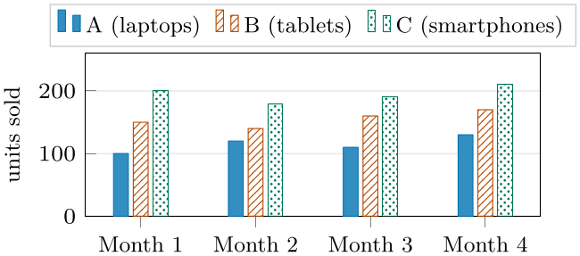
Figure 1.1. The sales matrix S as a bar chart. Each group of bars is one row of S (a month); each bar style is one column (a product). Product C (dotted) is the highest in every month.
Using this matrix, we can answer business questions with simple operations:
Total sales in Month 3: add the third row: 110+160+190=460 units.
Top-selling product overall: add each column. The column sums are 460 (A), 620 (B) and 780 (C), so Product C (smartphones) sells the most: 200+180+190+210=780 units.
Organizing data in matrix form allows us to use linear algebra to perform complex operations, reveal underlying structures, and compute solutions efficiently. Matrices are fundamental to many computer applications. For example, a digital image can be represented as a matrix, with one brightness value assigned to each pixel (Figure 1.2). Increasing the image brightness corresponds to multiplying the matrix by a scalar, while blending two photographs corresponds to adding two matrices. We define both operations in Section 1.2.
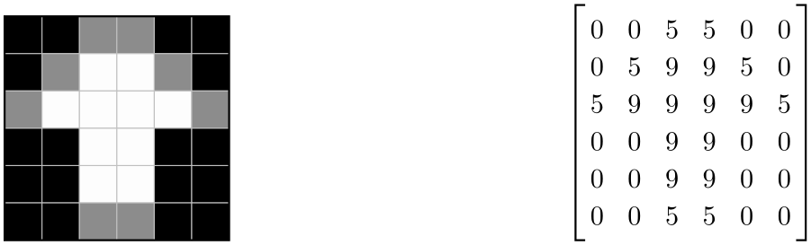
Figure 1.2. A digital image is a grid of pixels, where each pixel square holds a single brightness value (0 = black, 5 = mid-gray edge, 9 = white). The computer stores this grid directly as a matrix.
(a) Visual image: a 6×6 grid of square pixels. (b) Corresponding matrix stored in memory.
Let m,n be positive integers. A matrix is a rectangular array of entries arranged in m horizontal rows and n vertical columns. The entries may be real numbers or functions; in general, they are elements of some set S, and we then speak of a matrix overS. A matrix with m rows and n columns has size (also called dimension or order) m×n, read “m by n”. Rows are always counted first.
Capital letters (A,B,C) denote matrices, and lowercase letters with two subscripts (aij) denote entries. The entry in row i and column j of A is aij. In compact form, A=[aij]m×n.
A matrix with one row is a row matrix; a matrix with one column is a column matrix. An m×n matrix A looks like this (Figure 1.3). The entry aij lies at the intersection of the i-th row and the j-th column. The i-th row is given by [ai1ai2⋯ain], while the j-th column is given by a1ja2j⋮amj
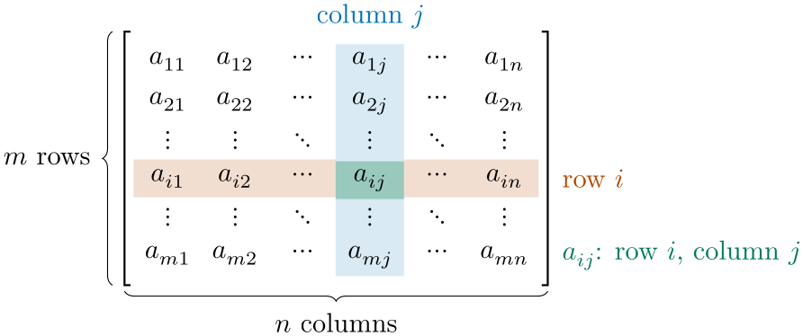
Figure 1.3. An m×n matrix. Row i (shaded pink) and column j (shaded blue) cross at the single entry aij.
Example: Matrix Notation
Consider the 2×3 matrix A: A=[10−3452] Here a12=−3 and a23=2. There is no entry a32, because A has only two rows.
Quick Check 1
A matrix has 12 entries. List every possible size it could have.
In the sales matrix S, what does the entry s23 mean, and what is its value?
Unlike real numbers, matrices can be added, subtracted and multiplied only when their sizes fit together. Division is not defined directly; the matrix inverse plays its role (Chapter 2).
Two matrices A=[aij]m×n and B=[bij]p×q are equal if and only if A=B⟺m=p,n=q,aij=bij∀i,j. For matrices of the same size, the sum and difference are defined entrywise: A±B=[aij±bij]m×n.
Example: Addition and Subtraction
Let A=[1324],B=[5768]. Then A+B=[1+53+72+64+8]=[610812],A−B=[1−53−72−64−8]=[−4−4−4−4].
Let A=[aij]m×n be a matrix and k∈R a scalar (a real number). The scalar productkA multiplies every entry of A by k: kA=[k⋅aij]m×n.
An expression such as kA+lB is called a linear combination of A and B.
Example: A Linear Combination
Let A and B be as in the addition and subtraction example, 3A−2B=[39612]−[10141216]=[−7−5−6−4].
Intuition
Let A and B be the matrices of two images like the one in Figure 1.2. Then 2A is the same picture with doubled brightness values (anything brighter than white is clipped to white), and 21A+21B is a 50 % blend of the two pictures.
Matrix multiplication combines two linked steps into one. If the first matrix turns inputs into intermediate quantities and the second turns those into final quantities, their product goes from inputs to final quantities in a single step. The rule is “row times column”: multiply matching entries of a row of A and a column of B, then add. (Multiplying entries in matching positions is a different operation, called the Hadamard product. It never mixes information from different positions, so it is rarely what we want.)
Definition
Let A be an m×n matrix and B an n×p matrix. The productC=AB is the m×p matrix whose entry cik is obtained by multiplying the i-th row of A and the k-th column of B entry by entry and adding the results: cik=j=1∑naijbjk=ai1b1k+ai2b2k+⋯+ainbnk.Compatibility rule:AB is defined if and only if the number of columns of A equals the number of rows of B. Figure 1.4 shows the size bookkeeping.
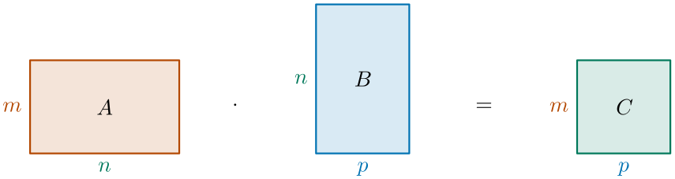
Figure 1.4. Size bookkeeping for C=AB. The two inner sizes (n, in green) must agree; the outer sizes m and p give the size of the product. Note that the width of A equals the height of B.
Intuition
Why is multiplication defined in such a strange way? Suppose the shop from Section 1.1 charges $900 for a laptop, $500 for a tablet and $700 for a smartphone. The revenue in Month 1 is 100⋅900+150⋅500+200⋅700=305,000. This is a “row times column” sum. Doing it for all four months at once gives Sp=100120110130150140160170200180190210900500700=305,000304,000312,000349,000. Matrix multiplication is exactly the bookkeeping for “combine many quantities with many weights”.
To compute c11 for A=[1324] and B=[5768], multiply the first row of A by the first column of B: c11=(1×5)+(2×7)=5+14=19. Computing all entries yields AB=[1⋅5+2⋅73⋅5+4⋅71⋅6+2⋅83⋅6+4⋅8]=[19432250].
Example: Non-Square Matrices
Let A=[1−10321] (size 2×3) and B=2041−10 (size 3×2). The inner sizes agree (3=3), so AB exists and has size 2×2: AB=[1⋅2+0⋅0+2⋅4−1⋅2+3⋅0+1⋅41⋅1+0⋅(−1)+2⋅0−1⋅1+3⋅(−1)+1⋅0]=[1021−4]. The product BA also exists, but it has size 3×3: BA=1143−305−18. So AB and BA do not even have the same size.
Falk’s scheme: a layout for hand computation
Figure 1.5 shows Falk’s scheme for matrix multiplication. It places the matrices A (m×n), B (n×p), and C=AB (m×p) on a grid, highlights the second row of A and the second column of B, and shows how the sum of the products of corresponding elements produces the entry c22. Blue projection lines connect the relevant row and column to C, while red arrows are the individual products and their sum.
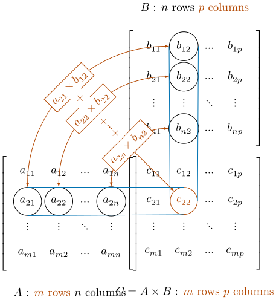
Figure 1.5. Falk’s scheme. Put A to the left and B above the product. Every entry of C=AB sits at the crossing of one row of A and one column of B.
Before we look at how matrices transform the plane, we need the notion of vector.
Algebraically, a vector is a column matrix, that is, an n×1 matrix such as x=[x1x2]. Geometrically, it is a directed line segment (an arrow) that describes a displacement: move x1 units horizontally and x2 units vertically.
Free vectors: the tail of the arrow can be placed anywhere in the plane. Two arrows with the same length and direction are the same vector.
Standard position: the tail is placed at the origin (0,0). The head is then the point (x1,x2), so the entries of the column double as coordinates.
The arrow gives spatial intuition (length and direction), and the column gives numbers to calculate with. A matrix takes an input vector and produces an output vector, so it can act as a “transformation machine”.
Let A=[acbd] and let x=[x1x2] be any input. The two special columns i=[10],j=[01] are called the standard basis vectors. They point along the two coordinate axes, and every input is built from them: x=[x1x2]=x1[10]+x2[01]=x1i+x2j.
Step 1: where do i and j go? Multiplying A by them picks out the columns of A: Ai=[acbd][10]=[a⋅1+b⋅0c⋅1+d⋅0]=[ac],Aj=[acbd][01]=[a⋅0+b⋅1c⋅0+d⋅1]=[bd]. So Ai is the first column of A and Aj is the second column.
Step 2: where does any x go? Since matrix multiplication respects sums and scalar multiples, A(u+v)=Au+Av and A(cu)=cAu, we get Ax=A(x1i+x2j)=x1(Ai)+x2(Aj)=x1[ac]+x2[bd], a linear combination of the matrix columns. This means the whole transformation is completely determined by where A sends i and j: Ai=first column of A,Aj=second column of A. The same computation works for any size. Let A be m×n with columns a1,…,an, and let x=x1⋮xn. Writing x=x1e1+⋯+xnen, where ek has a 1 in position k and 0 elsewhere (for n=2 these are i and j), we find Aek=ak, the k-th column of A, exactly as in Step 1. Then, as in Step 2, Ax=x1a1+x2a2+⋯+xnan. This gives a way to read a matrix product column by column. Let B have columns b1,…,bp. The entry in row i and column k of AB is (row i of A) times (column k of B), which is also the i-th entry of Abk. Therefore AB=[Ab1Ab2⋯Abp], that is, the k-th column of AB is A times the k-th column of B. For the matrices of the visualization example, with A=[1324] and first column [57] of B, A[57]=5[13]+7[24]=[5+1415+28]=[1943], which is the first column of AB.
Key Geometric Rule: Linear transformations keep the origin (0,0) fixed and, when A is invertible (Chapter 2), keep grid lines parallel and evenly spaced (a singular matrix collapses the plane onto a line or a point; see panel (d) of the figure below). The original unit square bounded by i and j transforms into the parallelogram spanned by Ai and Aj, which is flat if A is singular. Figure 1.6 shows what four fundamental 2×2 matrices do to the unit square.
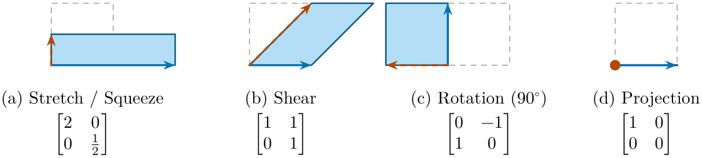
Figure 1.6. Four 2×2 matrices acting on the unit square (grey dashed outline). The solid blue arrow is Ai (first column of A) and the dashed orange arrow is Aj (second column). (a) Stretch. (b) Shear. (c) Rotation. (d) Projection.
Figure 1.6 shows four matrices A acting on the unit square. In each panel the solid blue arrow is Ai, the first column of A, and the dashed orange arrow is Aj, the second column.
Stretch.A=[20021] scales the x-axis by 2 and squeezes the y-axis by 21. The square becomes a wider and flatter rectangle of the same area, 2⋅21=1.
Shear.A=[1011] keeps i fixed and sends j to (1,1). Horizontal lines slide to the right by an amount proportional to their height.
Rotation.A=[01−10]=R(90∘) turns the plane 90∘ counterclockwise: i↦(0,1) and j↦(−1,0).
Projection.A=[1000] collapses the plane onto the x-axis. Since j↦(0,0) (the orange dot), the whole square is flattened onto a segment, and from the result alone we cannot recover the original point: information is destroyed.
A zero matrix (or null matrix), denoted O (or simply 0), is a matrix of any size m×n where every entry is equal to zero. A square matrix is a matrix that has an equal number of rows and columns (m=n). An n×n square matrix is said to be of order n.
The Kronecker delta is defined as δij={1,0,if i=j,if i=j,i,j∈{1,2,…,n}. Using the Kronecker delta, the identity matrix of order n, denoted In, is the n×n matrix whose (i,j)-entry equals δij: In=δ11δ21⋮δn1δ12δ22⋮δn2⋯⋯⋱⋯δ1nδ2n⋮δnn=10⋮001⋮0⋯⋯⋱⋯00⋮1.
To deeply understand matrix algebra, it is helpful to compare it to the arithmetic of real numbers (R). While many properties carry over, matrices introduce critical differences, namely the lack of commutativity and the existence of zero divisors.
In the realm of matrices, the real numbers 0 and 1 are replaced by the zero matrix (O) and the identity matrix (I), respectively.
Identities and negatives:A+O=A, A+(−A)=O, and ImA=AIn=A for an m×n matrix A.
Transpose of a product:(AB)T=BTAT (the order reverses).
Remark
Critical differences from scalar algebra. Each “rule” below holds for numbers but fails in general for matrices.
Zero divisors:AB=O does not imply A=O or B=O. Nonzero matrices A, B with AB=O are called zero divisors.
For instance, with A=[0010] and B=[1000] we get AB=O, but BA=[0010]=O.
No cancellation:AB=AC does not imply B=C (unless A is invertible); see Problem 2.
Binomial formula:(A+B)2=A2+AB+BA+B2, which equals A2+2AB+B2only ifAB=BA. Likewise (A+B)(A−B)=A2−AB+BA−B2=A2−B2 in general.
Powers of a product:(AB)2=ABAB is generally different from A2B2=AABB.
Figure 1.7 applies two transformations in both orders: S=[1011](a shear),R=[01−10]=R(90∘)(the quarter-turn rotation, see Section1.5).
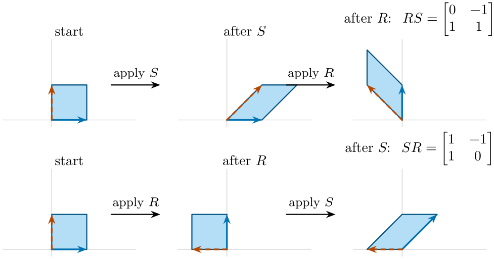
Figure 1.7.RS=SR: the shear S and the quarter-turn R=R(90∘) applied in the two orders. Top: shear first, then rotate. Bottom: rotate first, then shear.
In a product the matrix on the right acts first. So in the top row we shear first and then rotate, which is the product RS, and in the bottom row we rotate first and then shear, which is SR. Multiplying out, RS=[01−11],SR=[11−10]. The two final shapes in the figure are different (compare where the blue arrow ends), which agrees with RS=SR. So the order of the two transformations matters, and matrix multiplication is not commutative.
Quick Check 2
A is 3×2 and B is 2×4. Is AB defined? Is BA? Give the size of each product that exists.
A is 2×3 and B is 3×4. What are the sizes of (AB)T and of BTAT? Is ATBT defined?
In Figure 1.7, which of RS and SR sends i to (1,1)?
A is 3×2 and B is 3×4. Which of AB, ATB, BTA, ABT are defined? Give the size of each one that is.
Many matrices that appear in practice have a recognizable pattern of zeros, and that pattern makes calculations faster and reveals physical structure (Figure 1.8).
For a square matrix A=[aij]n×n, the entries a11,a22,…,ann form the main diagonal; their sum is the trace of A, written tr(A).
Diagonal matrix: aij=0 for all i=j.
The identity matrixIn (Section 1.3) is the diagonal matrix with 1s on the main diagonal.
Upper triangular matrix: aij=0 for all i>j (everything below the main diagonal is zero).
Lower triangular matrix: aij=0 for all i<j (everything above the main diagonal is zero).
Symmetric matrix: AT=A, that is, aij=aji (a mirror image across the diagonal).
Skew-symmetric matrix: AT=−A, that is, aij=−aji. This forces aii=0.
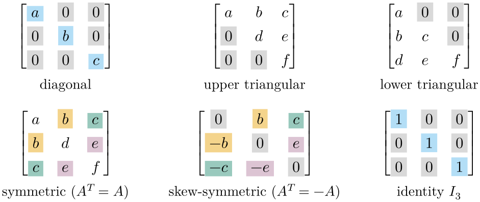
Figure 1.8. Zero patterns of special 3×3 matrices: (a) diagonal, (b) identity, (c) symmetric, (d) skew-symmetric. Grey cells are forced zeros.
Figure 1.8 shows four special types of 3×3 matrices A=[aij], where aij is the entry in row i and column j. Grey cells are entries that must be 0.
Diagonal.aij=0 whenever i=j. Only the main diagonal (blue cells) may contain nonzero numbers.
Identity. The diagonal matrix I whose diagonal entries are all equal to 1.
Symmetric.AT=A, that is, aji=aij. Entries of the same color mirror each other across the main diagonal and are equal. The diagonal entries are free.
Skew-symmetric.AT=−A, that is, aji=−aij. Entries of the same color mirror each other across the main diagonal and have opposite signs. For i=j this gives aii=−aii, so aii=0: the diagonal of a skew-symmetric matrix consists of zeros.
Theorem 1.1Symmetric plus skew-symmetric
Every square matrix A can be written in exactly one way as the sum of a symmetric and a skew-symmetric matrix: A=symmetric21(A+AT)+skew-symmetric21(A−AT).
Three facts are used often. The first follows from the transpose rules of Section 1.3.1; the other two follow directly from the definition of the product:
The product of two upper (or two lower) triangular matrices is again upper (lower) triangular.
Let D=diag(d1,…,dn) be the n×n diagonal matrix whose diagonal entries are the numbers d1,…,dn∈R. Then for every integer k≥1 one raises each diagonal entry to the power k, and the off-diagonal entries stay zero: Dk=diag(d1k,…,dnk). For example, (2003)4=(240034).
Quick Check 3
Is a matrix that is both upper and lower triangular necessarily diagonal?
Why must the diagonal of a skew-symmetric matrix be zero?
Matrices appear throughout science and engineering: in structural frameworks, electrical circuits, vibrating systems and robot arms, and also in digital imaging, economics and machine learning. Most applications follow the same recipe:
Write the local laws. Express the basic relationship for each component, such as Kirchhoff’s laws at a circuit node or Newton’s second law for a mass.
Assemble the global system. Collect all these equations into one matrix equation.
Use matrix algebra. Tools such as determinants, inverses then solve and analyze the whole system at once.
Ohm’s law: the voltage drop across a resistor is V=RI, where V is the voltage drop (volts), R>0 is the resistance (ohms, Ω), and I is the current through the resistor (amperes).
Kirchhoff’s voltage law (KVL): around any closed loop, the voltages that push the current (the sources) equal the voltage drops across the resistors.
Method. A mesh is a closed loop that contains no smaller loop.
Let a current Ik circulate clockwise around each mesh k. If the solution gives Ik<0, the current actually flows counterclockwise.
Apply KVL to each mesh. This gives one linear equation per mesh.
Write the equations as a matrix system and solve for the Ik.
Example. For three meshes in a row, with a source V1 in the first and V2 in the last: RR11−R120−R12R22−R230−R23R33II1I2I3=VV10−V2, where I is the vector of clockwise mesh currents, V is the vector of net source voltages, and R is the resistance matrix.
How to read it.
DiagonalRkk: total resistance around mesh k (the sum of all resistors lying on mesh k).
Off-diagonalRjk=Rkj: resistance shared by meshes j and k. It has a minus sign because, with all currents clockwise, neighboring currents run in opposite directions through the shared resistor. Meshes 1 and 3 share no resistor, so that entry is 0.
Right-hand side: entry k is the net source voltage in mesh k. A source enters with + if it pushes the current clockwise and with − if it opposes it. Mesh 2 has no source, so its entry is 0.
Where the signs come from. Consider mesh 1. The current through the shared resistor R12 is I1−I2, because I2 runs through it in the opposite direction. The remaining resistors of mesh 1 have total resistance R11−R12 and carry only I1. By Ohm’s law the total voltage drop around mesh 1 is (R11−R12)I1+R12(I1−I2)=R11I1−R12I2, and KVL sets it equal to the source voltage V1. This is the first row of the system. The same argument for meshes 2 and 3 gives −R12I1+R22I2−R23I3−R23I2+R33I3=0,=−V2.
Structure of R. The matrix R is symmetric, because a shared resistor affects both neighboring meshes in the same way, and tridiagonal, because in a row of meshes only neighbors share a resistor. It is also invertible. Indeed, ITRI is the sum of (resistance)×(current)2 over all resistors, so it is positive unless every resistor carries zero current, and this forces I=0 when the outer boundary contains at least one resistor. Hence the mesh currents are uniquely determined: I=R−1V.
Example: Two Meshes
KVL around mesh 1 gives V1=R1I1+R3(I1−I2), and around mesh 2 gives −V2=R2I2+R3(I2−I1), see Figure 1.9. In matrix form [R1+R3−R3−R3R2+R3][I1I2]=[V1−V2]. For R1=R2=1Ω, R3=2Ω, V1=10V, V2=5V: [3−2−23][I1I2]=[10−5]⟹I1=4A,I2=1A. (From the first equation I1=(10+2I2)/3; substituting into the second gives 35I2=35.)
The current through R3 is I1−I2=3A, downward. Check with the outer loop: V1−V2=5=R1I1+R2I2=4+1.✓
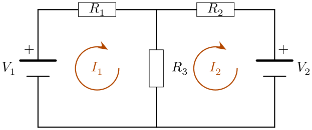
Figure 1.9. A two-mesh circuit. Both mesh currents I1,I2 are chosen clockwise. In the shared resistor R3 the current flows downward for I1 and upward for I2, so the net current is I1−I2. The longer plate of each battery is its + terminal: V1 pushes the current clockwise, whereas V2 pushes against I2.
A truss is a structure of straight bars joined at pins. Every bar carries a force only along its own axis: tension (pulling on the joints, positive) or compression (pushing, negative).
Physics & Engineering: Equilibrium of a Truss
Physical law. A joint at rest has no net force: ∑Fx=0and∑Fy=0, where ∑Fx and ∑Fy are the sums of the horizontal and vertical components of all forces acting on the joint. The positive x-direction points right and the positive y-direction points up.
Matrix form. Multiply the last two equations by −1 and move P to the right-hand side. The system becomes Ef=b: E(equilibrium matrix)−cosθ1−sinθ10cosθ2sinθ2cosθ2001ff1f2f3=b(loads)0−P0. Here f is the vector of unknown bar forces and b is the vector of known loads; only its second entry is nonzero, because the only applied load is P at joint 2.
Where the signs come from. We take joint 2 to be the top joint, with bars 1 and 2 going down to its left and right, and joint 3 to be the right-hand support. A bar acts on a joint along its own direction, and a tension pulls the joint toward the other end of the bar.
Joint 2, horizontal. Bar 1 pulls joint 2 to the left, giving −f1cosθ1. Bar 2 pulls it to the right, giving +f2cosθ2. No load acts horizontally, so the sum is 0.
Joint 2, vertical. Both bars pull joint 2 downward, giving −f1sinθ1 and −f2sinθ2. The load contributes −P.
Joint 3, horizontal. Bar 2 pulls joint 3 to the left, giving −f2cosθ2. Bar 3 also pulls it to the left, toward joint 1, giving −f3.
Solvability. There are three unknowns and three equations, so E is square. Expanding the determinant along the third column gives detE=−cosθ1sinθ2−sinθ1cosθ2=−sin(θ1+θ2), which is nonzero as long as θ1+θ2 is not a multiple of π. In that case E is invertible and the bar forces are uniquely determined by f=E−1b.
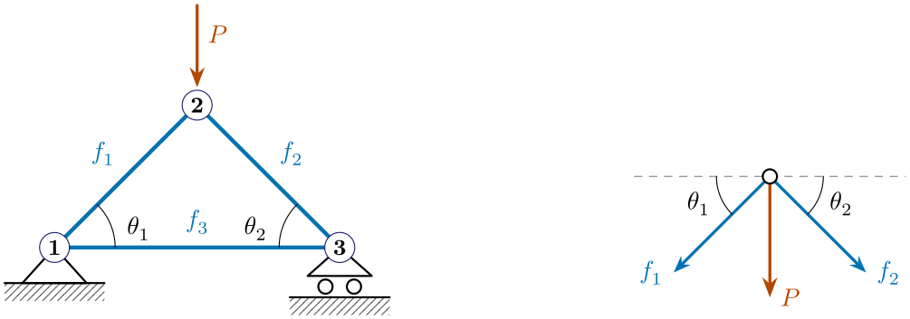
Figure 1.10. A triangular truss and the free-body diagram of its top joint. The bar forces are drawn as if the bars were in tension; all three arrows at joint 2 point downwards, so the vertical balance can only hold if f1 and f2 come out negative, that is, if the two upper bars are in compression.
(a) Pin at joint 1, roller at joint 3, load P at joint 2. (b) Forces on the pin at joint 2 (bars drawn in tension).
Example: A Symmetric Truss
Take θ1=θ2=θ=45∘ (Figure 1.11), so cosθ=sinθ=21. The first equation gives f1=f2. The second gives 2sinθf1=−P, so f1=f2=−2sinθP=−2P≈−0.71P(compression),f3=−cosθf2=2P(tension). The support reactions are P/2 each. By symmetry and the vertical balance of joint 3: R3=−f2sinθ=P/2
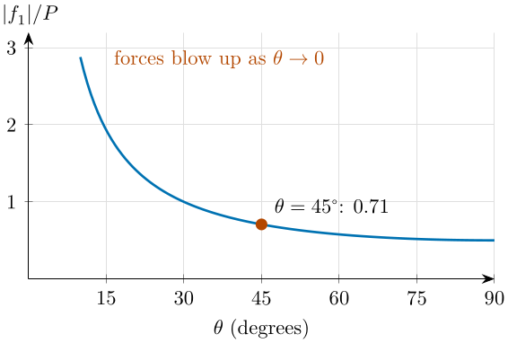
Figure 1.11. Force in each upper bar of the symmetric truss, ∣f1∣/P=1/(2sinθ). A flat truss (small θ) must carry enormous forces.
Two masses lie on a frictionless line. They are joined to each other and to two walls by three springs with stiffnesses k1,k2,k3.
External forces F1,F2 push the masses, which move by x1,x2.
The left spring is stretched by x1, the middle spring by x2−x1, and the right spring is compressed by x2.
Equilibrium. Each mass has zero net force: −k1x1+k2(x2−x1)+F1−k2(x2−x1)−k3x2+F2=0=0(mass 1),(mass 2). Each term is a spring force or an external force:
−k1x1 and −k3x2: the outer springs pull each mass back toward its wall.
±k2(x2−x1): the middle spring pulls the two masses toward each other, with equal and opposite forces on them.
Matrix form. Collecting the terms in x1 and x2 gives Kx=F with the stiffness matrixK: K[k1+k2−k2−k2k2+k3]x[x1x2]=F[F1F2].
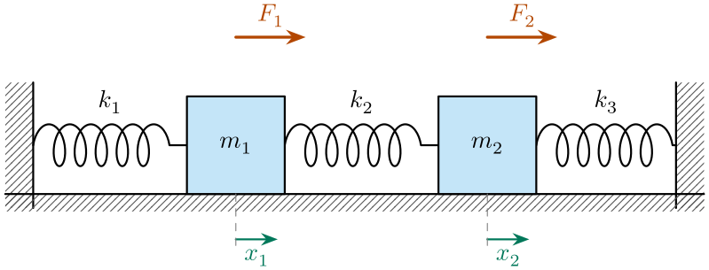
Figure 1.12. Two masses and three springs between two fixed walls. F1,F2 are applied forces; x1,x2 are the displacements from the rest positions (dashed guides).
Example: Three Equal Springs
Let k1=k2=k3=k, F1=0 and F2=F. Then k[2−1−12][x1x2]=[0F]. The first row gives x2=2x1; the second then gives 3kx1=F. Hence x1=3kF and x2=3k2F.
Rotation matrix. Rotating the plane counterclockwise by the angle θ about the origin is the transformation R(θ)=[cosθsinθ−sinθcosθ]. Its columns are the images of i and j (Figure 1.13a).
Length of a vector. For v=[xy] the length (or norm) is the distance from the origin to the point (x,y), given by the Pythagorean theorem: ∥v∥=x2+y2,sovTv=x2+y2=∥v∥2.
Two key facts.
Composition:R(θ)R(φ)=R(θ+φ).
Turning by φ and then by θ is the same as turning by θ+φ. (Multiplying out the matrices gives the angle-addition formulas of trigonometry; see Conceptual Problem 1.7.1.)
Length preservation: a rotation does not change lengths. Step 1. Multiplying out, R(θ)TR(θ)=[cos2θ+sin2θ00sin2θ+cos2θ]=I.Step 2. Therefore, for every vector v, ∥Rv∥2=(Rv)T(Rv)=vTRTRv=vTv=∥v∥2.
A square matrix Q with QTQ=I is called orthogonal. Orthogonal matrices preserve lengths: for every vector v with n entries, ∥Qv∥2=vTQTQv=vTv=∥v∥2, exactly as in Step 2 above, with Q in place of R. In the plane, the 2×2 orthogonal matrices are exactly the rotations R(θ) and the reflections in a line through the origin.
Example: Where Is the Gripper?
Link 1 points at angle θ1 and link 2 points at angle θ1+θ2. Using R(θ1)R(θ2)=R(θ1+θ2), the tip p is p=R(θ1)([L10]+R(θ2)[L20])=[L1cosθ1+L2cos(θ1+θ2)L1sinθ1+L2sin(θ1+θ2)]. For L1=L2=1, θ1=30∘, θ2=60∘ (Figure 1.13b): p=(cos30∘+cos90∘,sin30∘+sin90∘)=(23,23).
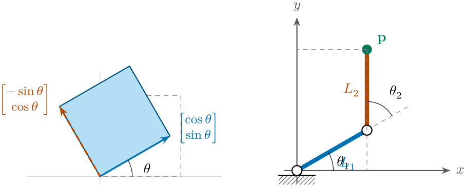
Figure 1.13. Rotation matrices and planar robot arm kinematics.
(a) Rotation by θ=30∘. (b) A two-link arm (L1=L2=1 drawn at scale 2).
Optional: mathematical induction and how to write the proof
The idea. Suppose we want to prove a statement P(n) for every integer n≥1. Think of a long row of dominoes. If the first one falls, and every domino that falls knocks over the next one, then all of them fall. Induction turns this picture into two checkable claims:
Base case:P(1) is true.
Inductive step: for every k≥1, if P(k) is true, then P(k+1) is true. The assumption “P(k) is true” is called the inductive hypothesis.
Together these give P(n) for all n≥1. P(1) gives P(2), which gives P(3), and so on.
How to write it. Say what P(n) is, check the base case, write “assume P(k) holds for some k≥1”, and then use that assumption to prove P(k+1). If the inductive hypothesis never appears in your argument, you have not used induction, and the step probably has a gap.
Example (a sum). Claim: 1+2+⋯+n=2n(n+1) for all n≥1.
Proof.Base case. For n=1 both sides equal 1. Inductive step. Assume 1+2+⋯+k=2k(k+1). Then 1+2+⋯+k+(k+1)=2k(k+1)+(k+1)=2(k+1)(k+2), which is the claim for n=k+1. ∎
Common mistakes.
Skipping the base case. Without it the dominoes never start falling. For example, “n=n+1” has a perfectly valid inductive step (add 1 to both sides), but it is false for every n.
Assuming what you want to prove. The inductive hypothesis is P(k), never P(k+1).
Variations. The base case may start at any integer n0, which then proves P(n) for all n≥n0. In strong induction the inductive step may assume P(1),…,P(k)all hold, not just P(k). This is useful when P(k+1) depends on several earlier cases. Proofs about n×n matrices often go by induction on n, as in cofactor expansion, where an n×n determinant is written in terms of (n−1)×(n−1) ones.
Problem 1: Matrix Powers
Given A=[1021], compute A2,A3, and deduce a general formula for An, n∈N.
Solution.A2=[1021][1021]=[1041],A3=A2A=[1041][1021]=[1061]. In both products the diagonal stays 1,1, the lower-left entry stays 0, and the upper-right entry grows by 2 each time we multiply by A. The pattern suggests An=[102n1](n≥1). A pattern is only a guess, so we prove it by induction on n.
Proof. Let P(n) be the statement “An=[102n1]”.
Base case (n=1). Here A1=A=[1021], which is exactly the formula with n=1. So P(1) is true.
Inductive step. Let k≥1 and assume P(k) holds, that is, Ak=[102k1] (the inductive hypothesis). We must show P(k+1). Since Ak+1=AkA, the hypothesis lets us replace Ak and multiply row by column: Ak+1=AkA=[102k1][1021]=[1⋅1+2k⋅00⋅1+1⋅01⋅2+2k⋅10⋅2+1⋅1]=[102k+21]=[102(k+1)1]. This is exactly P(k+1).
Conclusion.P(1) is true, and P(k)⇒P(k+1) for every k≥1. By the principle of mathematical induction, P(n) holds for all n∈N, so An=[102n1]. ∎Geometric meaning.A is a shear: it slides the top edge of the unit square two units to the right. Applying it n times slides it 2n units (Figure 1.14).
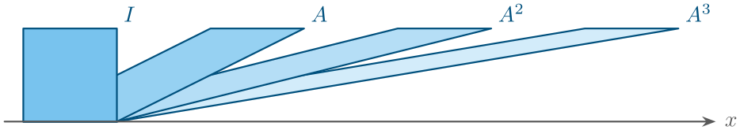
Figure 1.14. The unit square and its images under I, A, A2, A3 for A=[1021]. Each application of A shifts the top edge two more units to the right, matching An=[102n1].
Problem 2: Failure of Cancellation
Find a nonzero matrix A and two different matrices B=C such that AB=AC.
Solution. Let A=[1000], B=[1324] and C=[1526]. Then AB=[1000][1324]=[1020]=[1000][1526]=AC, although B=C. Why it happens:Ax=(x1,0) discards the second coordinate, so it cannot “see” that the second rows of B and C differ. Equivalently A(B−C)=O with B−C=O.
Problem 3: Order Matters
For A=[1011] and B=[1101] compute AB and BA.
Solution.AB=[1⋅1+1⋅10⋅1+1⋅11⋅0+1⋅10⋅0+1⋅1]=[2111],BA=[1112]. So AB=BA, even though both matrices are 2×2 with entries 0 and 1. Geometrically, A shears to the right and B shears upward; shearing right and then up gives a different result from shearing up and then right.
Problem 4: Symmetric and Skew-Symmetric Parts
Decompose A=[1423] as A=S+K with ST=S and KT=−K.
Solution. By Theorem 1.1, S=21(A+AT) and K=21(A−AT). Here AT=[1243], so S=21[2666]=[1333],K=21[02−20]=[01−10]. Indeed S+K=A, ST=S and KT=−K.
Problem 5: AAT versus ATA
For A=[142536] compute AAT and ATA. What are their sizes? What do they have in common?
Solution.A is 2×3, so AAT is 2×2 and ATA is 3×3: AAT=[14323277],ATA=172227222936273645. Both are symmetric (Section 1.4) and both have trace 91: 14+77=17+29+45. This is no accident: tr(AAT)=tr(ATA) by Conceptual Problem 1.7.1.
Try these before touching a calculator: most can be answered by thinking about sizes, symmetry or geometry.
Commutativity analysis. Find all 2×2 matrices X=[acbd] that commute with A=[1000], that is, XA=AX. What structure must X have?
Symmetric product property. If A and B are symmetric n×n matrices, prove that AB is symmetric if and only ifA and B commute (AB=BA).
Nilpotent matrices. A square matrix N is nilpotent if Nk=O for some positive integer k.
Show that [0010] is nilpotent.
Show that N=000100010 satisfies N2=O but N3=O.
Verify (I−N)(I+N+N2)=I. (It is the matrix version of the geometric series 1/(1−x)=1+x+x2+⋯.)
Trace. Recall that the trace tr(A) of a square matrix is the sum of its diagonal entries. Prove that tr(AB)=tr(BA) for any m×n matrix A and n×m matrix B. (When m=n, AB and BA have different sizes!)
True or false? Justify each answer with a proof or a counterexample.
If A and B both have size m×n, then AB is defined.
If AB is defined, then BA is defined.
If A2=O, then A=O.
(A+B)(A−B)=A2−B2 for all square A,B of the same size.
If A is symmetric, then A2 is symmetric.
A diagonal matrix commutes with every square matrix of the same size.
Size detective. Let A be 3×2, B be 2×4 and C be 4×3. Which of AB, BA, ABC, CAB, ACB and (AB)T are defined? Give the size of each one that is.
Geometry of two matrices.
What does W=[0110] do to the point (x,y)? Predict W2 without multiplying, then check.
What does Π=[1000] do to (x,y)? Use your answer to explain, in one sentence, why ΠB=ΠC can hold with B=C.
Spot the error. A student writes (AB)T=ATBT “because transposing is just flipping”. Use a 2×3 matrix A and a 3×4 matrix B to show that this cannot be right, and state the correct rule.
Reading the physics.
In the truss equation Ef=b, why is the third column of E equal to (0,0,1)T?
Why is the mesh-resistance matrix symmetric?
A third mass and a fourth spring k4 are added to the spring chain. Which entries of the new 3×3 stiffness matrix are nonzero?
Rotations compose. Without computing, what must R(θ)R(φ) be? Now multiply the two matrices and compare entries to derive the formulas for cos(θ+φ) and sin(θ+φ).
Given A=[21−13] and B=[0−124], evaluate (A+B)2 and compare it with A2+2AB+B2. Explain why they differ, and find the matrix by which they differ.
A robot joint rotates its coordinate frame by M=[cosθsinθ−sinθcosθ]. Compute M2 and MTM. Interpret both results geometrically: what rotation is M2, and what does MTM=I say about lengths?
For A=[142536] and B=101011 compute AB and BA, and verify tr(AB)=tr(BA).
Truss. For the truss of Figure 1.10 with θ1=30∘, θ2=60∘ and P=10kN, solve Ef=b. State which bars are in tension and which in compression.
Circuit. In the circuit of Figure 1.9 let R1=2Ω, R2=3Ω, R3=6Ω, V1=12V and V2=6V. Write the mesh equations in matrix form and find I1, I2 and the current through R3.
Springs. In Figure 1.12 let k1=k3=2k, k2=k, F1=F and F2=0. Find x1 and x2. Compare with the example in the text and comment on the result.
Robot arm. For L1=2, L2=1, θ1=60∘ and θ2=−30∘, find the tip position p and sketch the arm.
Chapter 2Determinants and Inverses
After this chapter you can…
Explain the determinant as a signed area or volume. § 2.1.1
Compute determinants by formula, Sarrus’ rule and Laplace expansion. § 2.1.4
Compute determinants by row reduction, using the properties of the determinant. § 2.2
Find A−1 by the adjugate formula or Gauss–Jordan elimination. § 2.3
Let A be a square matrix. The determinant, written det(A) or ∣A∣, is a single number attached to A. (The bars in ∣A∣ are only another notation for detA; they do not mean an absolute value. The absolute value of the number is written ∣detA∣.) Before learning how to compute it, here is what it tells us.
Multiplying by a 2×2 matrix A moves every point (x,y) of the plane to a new point. The unit square with corners (0,0), (1,0), (1,1), (0,1) is moved to a parallelogram whose sides are the columnsa1,a2 of A: the corners (1,0) and (0,1) go to the first and second column (these two points are the tips of the standard basis vectors, see Chapter 4). Figure 2.1 shows two examples.
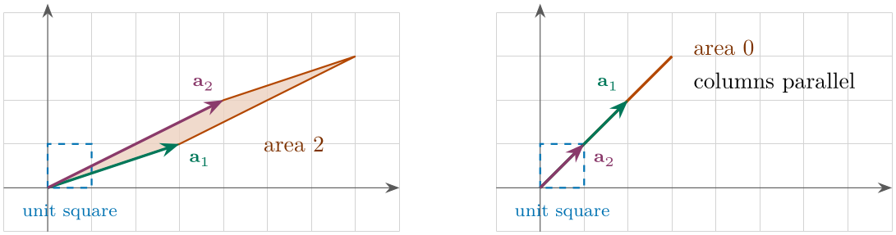
Figure 2.1.
(a)A=[3142], detA=2(b)A=[2211], detA=0
The determinant describes this picture with one number:
∣detA∣ is the factor by which areas are multiplied. The unit square has area 1, so its image has area ∣detA∣ (volumes, in 3D);
detA=0 means the parallelogram is flattened onto a line (or a point). Different points then land on the same point, so the move cannot be undone: A has no inverse.
The sign of detA carries information too (it records whether the picture is flipped like a mirror image); we meet it in Section 2.2. In three dimensions the columns of a 3×3 matrix span a parallelepiped and ∣detA∣ is its volume, see Figure 2.2.
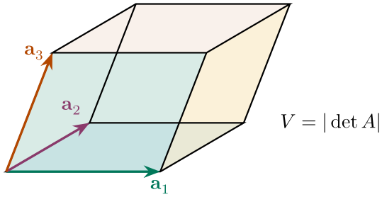
Figure 2.2. The column vectors a1,a2,a3 of A=[a1a2a3] span a parallelepiped of volume V=∣detA∣. If the three vectors lie in one plane (are coplanar), the box is flat, the volume is 0, and A is singular.
Remark
Vectors as matrices. A vector with n entries can be regarded as an n×1 matrix, called a column matrix, and so all the rules for matrices apply to it. For example, in the plane v=[xy]or, written in a line,v=(x,y). Both notations mean the same vector. The square brackets display the entries as a column, which is what we need when we multiply by a matrix, as in Av. The parentheses save space in the text, and we use them when the position of the vector matters more than its matrix form. We study vectors in more detail in Chapter 4.
For a 1×1 matrix A=[a], the determinant is the number itself: detA=a.
Let A=[acbd]. Its determinant is det(A)=ad−bc(main diagonal minus anti-diagonal). Geometrically, det(A) is the signed area of the parallelogram spanned by the column vectors v1=[ac]andv2=[bd] of A=[v1v2] (Figure 2.3).
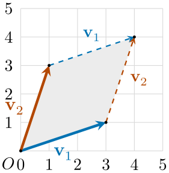
Figure 2.3. The parallelogram spanned by v1=[31] and v2=[13]. The area of this shaded region equals det([v1v2])=∣(3)(3)−(1)(1)∣=8.
What does “spanned” mean?
The span of two vectors is the set of all linear combinations c1v1+c2v2 with real numbers c1,c2.
As a region. Starting at the origin and walking along v1 and v2, the region bounded by 0, v1, v2 and v1+v2 is a tilted parallelogram. The determinant measures its (signed) area.
Plane or line. If v1,v2 point in different directions, their span fills the whole plane (detA=0). If they lie along one line (linearly dependent), the parallelogram collapses to a segment of zero area (detA=0).
Example: Determinant of a 2×2 Matrix
For A=[3142]: det(A)=3⋅2−4⋅1=2 (the area 2 of Figure 2.1a).
Swap the two columns: A′=[4231] has det(A′)=4⋅1−3⋅2=−2. The same parallelogram, but traversed in the opposite orientation: the sign flips.
Common mistake
The sign of the determinant. A negative determinant does not mean “negative area”. The area (or volume) is ∣detA∣; the sign only records whether the orientation is preserved or flipped. Also, only square matrices have a determinant.
2.1.3 Determinant of a 3×3 Matrix: Sarrus’ Rule (Basket-Weave)#
For A=[aij] of size 3×3, repeat the first two columns to the right of the matrix. Multiply along the three downward diagonals (solid arrows, positive terms a,b,c) and along the three upward diagonals (dashed arrows, negative terms d,e,f):
For A=147258369 Sarrus’ rule gives downward 45+84+96=225 and upward 105+48+72=225, so det(A)=0. Why? Look at the rows: R3=2R2−R1 (indeed 7=8−1, 8=10−2, 9=12−3). One row is a combination of the others, so the three columns lie in one plane and the parallelepiped of Figure 2.2 is flat.
Common mistake
Sarrus’ rule works only for 3×3 matrices. A 4×4 determinant has 4!=24 terms, not the 8 that a similar “diagonal” scheme would give, so the pattern does not extend. For larger matrices use Laplace expansion or row reduction.
2.1.4 Determinant of an n×n Matrix: Laplace Expansion#
Laplace expansion reduces an n×n determinant to determinants of size n−1, and works for every n.
Definition: Minor and Cofactor
Let A=[aij] be n×n. The minorMij of the entry aij is the determinant of the (n−1)×(n−1) matrix obtained by deleting the i-th row and j-th column of A. The cofactor of aij is Cij=(−1)i+jMij.
The factor (−1)i+j gives a checkerboard of signs, starting with + in the upper-left corner:
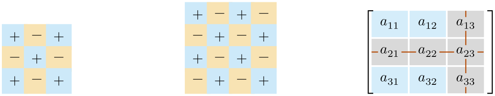
Figure 2.4. Left and middle: the sign (−1)i+j attached to each position. Right: to find the minor M23 delete row 2 and column 3 (grey entries, crossed out); the remaining blue entries form the smaller matrix whose determinant is M23.
C11: delete row 1 and column 1: M11=a22a32a23a33=a22a33−a23a32, and C11=(−1)1+1M11=M11.
C23: delete row 2 and column 3 (Figure 2.4, right): M23=a11a31a12a32=a11a32−a12a31, and C23=(−1)2+3M23=−M23.
Theorem 2.1Laplace expansion
The determinant of an n×n matrix A can be computed by expanding along any row i or any column j: along row i:along column j:det(A)=ai1Ci1+ai2Ci2+⋯+ainCin,det(A)=a1jC1j+a2jC2j+⋯+anjCnj.
Choosing the row or column. Terms with aij=0 vanish, so expand along the row or column with the most zeros: it saves the most minors. Expanding along row 1 of a 3×3 matrix gives det(A)=a11a22a32a23a33−a12a21a31a23a33+a13a21a31a22a32.
Example: Expansion Along the First Row
For the matrix A=211031124 of the Sarrus example: det(A)=23124−01124+11131=2(10)−0+1(−2)=18, in agreement with Sarrus’ rule. The zero in position (1,2) removed one minor.
Example: A 4×4 Determinant
Find det(A) for A=1372258100034693. Column 3 contains three zeros, so expand along it:
det(A)=a43C43=3C43 with C43=(−1)4+3M43=−M43, where M43=137258469=1(45−48)−2(27−42)+4(24−35)=−3+30−44=−17. So C43=17 and det(A)=3⋅17=51.
Common mistake
Cofactor expansion.
The sign (−1)i+j belongs to the position, not to the number sitting there. For a12=−3 the term is a12C12=(−3)(−M12)=+3M12.
A minor is not a cofactor: forgetting (−1)i+j is the most frequent source of wrong answers.
Use the entries of one row (or column) with the cofactors of that same row (column). Entries of row i with cofactors of a different row give 0, which can hide a mistake.
Quick Check 1
Which row or column would you expand along for 314050201, and what is the determinant?
Expanding recursively produces n! products, which explodes. Row reduction (Section 2.2) needs only about 31n3 multiplications.
Table 2.1. Cost of computing a determinant. Cofactor expansion is perfect for small matrices or matrices with many zeros, hopeless for large ones; software always uses row reduction (LU decomposition).
We write Ri for the i-th row and Cj for the j-th column. The three elementary row operations are
Ri↔RjRi→kRiRi→Ri+kRjswap rows i and j,multiply row i by k=0,add k times row j to row i(i=j).
Effect of row operations.
Swap. Interchanging two rows (or two columns) changes the sign of the determinant: det↦−det.
Scaling. Multiplying one row (or column) by k multiplies the determinant by k: det↦kdet.
Replacement. Adding a multiple of one row (column) to another row (column) does not change the determinant.
Linearity in a row. If row i is a sum r+s, then the determinant is the sum of the two determinants with row i replaced by r and by s (other rows unchanged). But det(A+B)=detA+detB in general.
When the determinant is zero, or easy to read off.
Zero row or column. If a row or a column is zero, then det=0.
Equal or proportional rows. If two rows (or columns) are identical, or one is a multiple of another, then det=0.
Dependent rows. More generally, if one row (column) is a linear combination of the other rows (columns), then det=0. (A replacement turns that row into a zero row without changing det.) This is the algebraic reason why a singular matrix has det=0.
Triangular matrices. For an upper or lower triangular matrix the determinant is the product of the diagonal entries: deta1100⋮0∗a220⋮0∗∗a33⋮0⋯⋯⋯⋱⋯∗∗∗⋮ann=a11a22⋯ann. In particular detIn=1.
Algebraic rules.
Transpose.det(AT)=det(A). (So every statement about rows is also true for columns.)
Multiplicativity.det(AB)=det(A)det(B).
Scalar multiple. For an n×n matrix A: det(kA)=kndet(A).
Why det(AB)=detAdetB and det(kA)=kndetA.AB means “first transform by B, then by A”. B multiplies areas by detB and then A multiplies the result by detA, so the overall factor is the product. For kA each of the n sides of the box is stretched by k: doubling every side of a cube multiplies its volume by 23=8, not by 2.
Table 2.2. Effect of row operations on the determinant (Properties 2.2–2.2). Here the rows are the sides of the parallelogram, which is allowed because detAT=detA.
Row operation
Effect on det
Geometric meaning
Ri↔Rj
×(−1)
orientation reversed (mirror image)
Ri→kRi
×k
one side of the parallelogram stretched by k
Ri→Ri+kRj
×1
a shear: base and height unchanged, so area unchanged
Common mistake
Common mistakes with the properties.
Only Ri→Ri+kRj leaves det unchanged. The operation Ri→kRi+Rj replaces row i by a multiple of itself, so it multipliesdet by k.
When you scale a row to simplify, compensate: if you divide a row by k to get smaller numbers, the original determinant is k times the new one.
Count every swap. Two swaps cancel, three do not. For solving systems you may scale rows freely; for determinants you must keep a record of every scaling and swap.
The determinant is not additive: det(A+B)=detA+detB and det(kA)=kdetA. It is linear in one row at a time, not in the whole matrix. For A=B=I2: det(A+B)=4 but detA+detB=2.
Example: Reduction to Triangular Form
Compute det(A) for A=2461−2132−1 using only replacements (Property 2.2), which do not change the determinant.
The matrix is upper triangular (Property 2.2), so det(A)=(2)(−4)(−8)=64.
Intuition
Elimination reshapes the parallelepiped. A replacement is a shear (Figure 2.5): it slides the shape sideways without changing base or height, so the volume is unchanged. A sequence of shears straightens a parallelepiped into a rectangular box whose sides are the diagonal entries; its volume is their product. Swaps flip the orientation (a sign) and scalings stretch one side (a factor). That is the whole algorithm for computing a determinant by elimination.
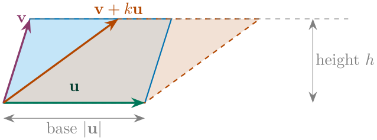
Figure 2.5. Replacement R2→R2+kR1 in rows-as-sides language: replacing v by v+ku slides the top edge of the parallelogram sideways (blue solid becomes vermilion dashed). Base and height are unchanged, so the area (the determinant) is unchanged.
Example: When a Swap Is Needed
A zero in the pivot position forces a row swap, and every swap flips the sign.
Let A=012211103.
R1↔R2 gives 102121013 (one swap, so det is multiplied by −1); R3→R3−2R1 gives 10012−1013; R3→R3+21R2 gives 1001200127.
The triangular determinant is 1⋅2⋅27=7, so det(A)=−7. (Check by expanding along row 1: 0−2(3−0)+1(1−2)=−7.)
Example: Multiplicativity and det(kA)
For A=[1324] (det=−2) and B=[0111] (det=−1): AB=[2437] and
det(AB)=14−12=2=(−2)(−1). Also det(3A)=39612=36−54=−18=32⋅(−2), not 3⋅(−2).
The sum rule fails: det(A+B)=1435=−7=−2+(−1).
An n×n matrix A is invertible (or nonsingular) if there is an n×n matrix B such that AB=BA=In, where In is the identity matrix. Then B is unique and is called the inverse of A, written A−1. A matrix with no inverse is singular.
Analogy: Multiplicative Inverse of Real Numbers
Just as the multiplicative inverse of a non-zero real number a is a−1=1/a where a⋅a−1=1, the inverse of a square matrix A is A−1 where A⋅A−1=In.
In real numbers, you cannot divide by zero (0 has no inverse). In linear algebra, a matrix with det(A)=0 similarly has no inverse.
Theorem 2.2Invertibility criteria
For an n×n matrix A the following statements are equivalent:
A is invertible;
det(A)=0;
Ax=b has exactly one solution for every b;
A can be reduced to the identity matrix by row operations.
Intuition
Invertible means “nothing is lost”.
Singular case. A singular matrix squashes space (Figure 2.1b), so different inputs land on the same output.
Example. The projection P=[1000] sends [12]↦[10]and[15]↦[10]. Given only the output [10], no inverse can tell which input it came from.
Invertible case. An invertible matrix never merges points, so every output has exactly one input.
Why this explains the criteria. If a matrix merges points, then
some nonzero x has Ax=0 (the inputs squashed to 0),
For A=[acbd] with det(A)=ad−bc=0, A−1=ad−bc1[d−c−ba]. Memory aid: swap the diagonal entries, negate the off-diagonal entries, divide by the determinant. Since det(A−1)=detA1, a transformation that doubles areas is undone by one that halves them.
Example: Inverse of a 2×2 Matrix
Find the inverse of A=[4231].
det(A)=4⋅1−3⋅2=−2=0, so A is invertible and A−1=−21[1−2−34]=[−21123−2].
The adjugate (or classical adjoint) of A is the transpose of the cofactor matrix C=[Cij]: adj(A)=CT,Cij=(−1)i+jMij. Multiplying the entries of row i by their own cofactors gives detA (Laplace expansion); multiplying them by the cofactors of a different row gives 0. Together these facts say Aadj(A)=det(A)I, hence
Theorem 2.3Adjugate formula
If det(A)=0 then A−1=det(A)1adj(A).
Optional: alien cofactors
If you multiply the entries of row i by the cofactors of a different row k=i, the sum is always 0: ai1Ck1+ai2Ck2+⋯+ainCkn=0(i=k). (It is the expansion of a determinant that has two equal rows.) This is what makes all off-diagonal entries of Aadj(A) vanish.
Example: Inverse of a 3×3 Matrix by the Adjugate
Compute A−1 for A=101240356.
1. Determinant (expand along row 2, which has a zero): det(A)=4(−1)2+21136+5(−1)2+31120=4(6−3)−5(0−2)=12+10=22=0.2. Cofactors:C11C21C31=+4056=24,=−2036=−12,=+2435=−2,C12C22C32=−0156=5,=+1136=3,=−1035=−5,C13C23C33=+0140=−4,=−1120=2,=+1024=4.3. Adjugate (transpose of the cofactor matrix): C=24−12−253−5−424,adj(A)=CT=245−4−1232−2−54.4. Inverse:A−1=221245−4−1232−2−54=1112225−112−116223111−111−225112.
Common mistake
The adjugate.
The adjugate is the transpose of the cofactor matrix. Forgetting the transpose gives (A−1)T instead of A−1.
Write the checkerboard of signs first (Figure 2.4); one wrong sign, for example in C13, ruins a whole row or column of the answer.
Always verify with Aadj(A)=det(A)I: an entry that comes out wrong points to the offending row of A and column of adj(A).
The formula is exact and elegant, but needs n2 determinants of size n−1; for numerical work use Gauss–Jordan or an LU decomposition.
Write A and the identity side by side, [A∣I], and apply row operations until the left block becomes I. The same operations turn the right block into A−1: [A∣I]row operations[I∣A−1]. If the left block cannot be reduced to I (a zero row appears), A is singular.
Example: Gauss–Jordan
Find the inverse of A=101110011 (detA=2). =2mu 101110011100010001R3−R110011−101110−1010001R3+R210011001210−101100121R310011001110−2101210021R2−R3100110001121−21021210−2121R1−R21000100012121−21−21212121−2121. Hence A−1=2111−1−1111−11.
Optional: Why Gauss–Jordan finds the inverse
Each row operation is multiplication on the left by an elementary matrix E. Suppose the operations E1,…,Ek turn A into I. Then Ek⋯E1A=IsoEk⋯E1=A−1. Applying the very same operations to I gives Ek⋯E1I=A−1. Hence the right half of [A∣I] is a running record of everything we did to A: [A∣I]⟶[I∣A−1].
Example: When Gauss–Jordan Fails (Singular Matrix)
Try A=147258369, the singular matrix of the Sarrus section. =2mu 147258369100010001R2−4R1R3−7R11002−3−63−6−121−4−7010001R3−2R21002−303−601−4101−2001. The left block has a zero row, so it can never become I: A is singular, in agreement with detA=0. The right block even tells us why: its last row says 1⋅R1−2⋅R2+1⋅R3=0, the dependence among the rows of A.
A linear matrix equation has the form AX+B=C, with A an n×n matrix, X the unknown n×p matrix, and B,C given n×p matrices. If A is invertible, subtract B and multiply from the left by A−1: AX=C−B⟹X=A−1(C−B), and the solution is unique. For XA+B=C multiply from the right: X=(C−B)A−1. Matrix multiplication is not commutative, so A−1(C−B) and (C−B)A−1 are generally different: writing X=DA−1 for AX=D is wrong (it solves XA=D), and one may not cancel A from the middle of a product. Check that B and C have the same size as AX.
Systems of equations. The case p=1 (and B=0) is a linear system Ax=b with x=A−1b. This is exactly what the circuit and spring examples of Section 2.4 do. For one system, elimination is cheaper than computing A−1; the inverse pays off when the same A is used with many right-hand sides (the columns of A−1 are the responses to unit inputs).
Example: A System Solved with the Inverse
Solve 3x+y=5, 4x+2y=6. Here A=[3412], b=[56], detA=2, so x=A−1b=21[2−4−13][56]=21[4−2]=[2−1].
Whenever several quantities are coupled linearly (forces in a structure, currents in a network, coordinates in a robot arm) the model is a matrix equation, and the determinant decides whether the problem is well posed. This section collects the most important uses.
Rotations, scalings, reflections and shears of the plane are all given by 2×2 matrices, and their determinants describe what they do to area and orientation (Figure 2.6 and Table 2.3).
Figure 2.6 shows the unit square and its image under six transformations. In each panel the green arrow is Ai, the first column of the matrix A, and the purple arrow is Aj, the second column. The panels illustrate five kinds of transformation:
Rotations and shears preserve area: the image of the square has the same area as the square. A rotation also preserves lengths and angles, while a shear slants the square into a parallelogram.
Scalings multiply the area. Stretching the x-axis by a and the y-axis by b multiplies the area by ab.
A reflection flips the orientation: the image is the mirror image of the square, which corresponds to a negative determinant.
A projection flattens the square onto a segment. The determinant is zero, and the matrix is not invertible, because from the image alone we cannot recover the original point.
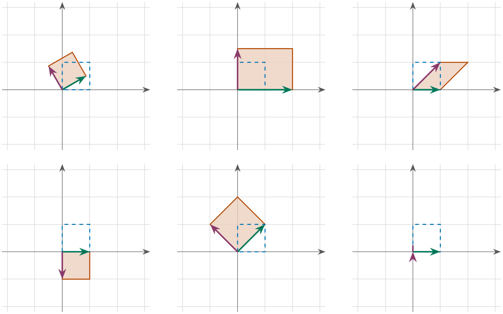
Figure 2.6. The unit square (blue, dashed) and its image (vermilion) under six transformations. The green and purple arrows are the images of e1 and e2, the columns of the matrix.
Table 2.3. Basic plane transformations. For a composition the determinants multiply (Property 2.2): rotating (det 1), scaling by 2×1.5 (det 3), then reflecting (det −1) gives a map with determinant −3: areas triple and the orientation flips.
Kirchhoff’s voltage law (KVL). Going once around any closed loop of a circuit, the voltage rises from the sources equal the voltage drops across the resistors. Combined with Ohm’s law V=RI, each loop gives one linear equation in the loop currents.
The linear system. Take one loop current per mesh (a closed loop with no smaller loop inside it). For a network with n meshes, RI=V, where
I=[I1⋯In]T is the vector of mesh currents (the unknowns, in amperes),
V=[V1⋯Vn]T is the vector of source voltages: Vk is the net voltage that the sources push around mesh k (in volts, with + in the direction of Ik),
R is the resistance matrix (n×n, in ohms). Its diagonal entry Rkk is the total resistance around mesh k, and the entry Rjk=Rkj (j=k) is minus the resistance shared by meshes j and k (it is 0 if they share none). So R is symmetric.
When are the currents determined? The system has a unique solution I=R−1V for every choice of source voltages exactly when detR=0. If detR=0, there is a nonzero I with RI=0, so currents would not be determined by the sources.
Why detR=0 for positive resistors. Suppose RI=0. Then ITRI=0. But ITRI is the total power dissipated in the resistors, a sum of terms (resistance)×(current through that resistor)2. With all resistances positive, this sum is 0 only if no current flows anywhere, so I=0. Hence RI=0 has only the trivial solution, and detR=0.
Example: Two-Loop Network
Voltage law for loop 1: R1I1+R2(I1−I2)=V; for loop 2: R3I2+R2(I2−I1)=0. With the values of Figure 2.7: [5−3−37][I1I2]=[100],detR=35−9=26=0.I1=1335≈2.69 A, I2=1315≈1.15 A.
Inverse:R−1=261[7335] gives the same currents, and, being computed once, solves the problem for any source voltages: the columns of R−1 are the response to a unit source in each loop.
Check (energy): the source delivers 10⋅1335=13350≈26.9 W and the resistors dissipate 2I12+3(I1−I2)2+4I22=1694550=13350W
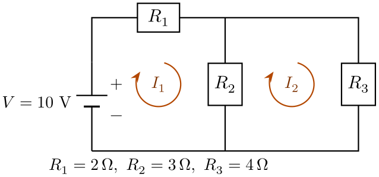
Figure 2.7. A two-loop resistor network with one source. The long plate of the battery is its positive terminal, so both mesh currents circulate clockwise. The middle resistor R2 carries the difference I1−I2 of the two mesh currents.
2.4.3 Structures and Vibrations: the Stiffness Matrix#
Structural analysis. A structure (a truss, a frame, or the spring–mass chain of the earlier example) is described by its nodes, the joints or masses that can move. When loads act on it, the nodes are displaced until the internal forces balance the loads.
The linear system. For n displacement unknowns, Kx=F, where
x=[x1⋯xn]T is the vector of displacements of the nodes (the unknowns, in meters),
F=[F1⋯Fn]T is the vector of loads, the external forces applied at the nodes (in newtons),
K is the stiffness matrix (n×n, in N/m). The entry Kij is the force needed at node i to hold node j displaced by one unit while all other nodes stay fixed. By Newton’s third law, Kij=Kji, so K is symmetric.
When is the structure stable? The structure is stable if every load F produces exactly one displacement x=K−1F. This happens exactly when detK=0.
What a zero determinant means. If detK=0, there is a nonzero x with Kx=0: the nodes move, but no force is needed. The structure is a mechanism, because it can move without any spring stretching. Moreover, some loads then have no equilibrium displacement at all, and others have infinitely many.
Example. In the spring–mass chain, K=[k1+k2−k2−k2k2+k3]. If both walls are removed (k1=k3=0), then K=[k2−k2−k2k2],detK=0,K[11]=[00]. Both masses can slide together by the same amount, and the middle spring is not stretched (its stretch is x2−x1=0).
Example: Two Masses on Springs
Setup (Figure 2.8). A wall is joined to mass 1 by a spring k1, and mass 1 to mass 2 by a spring k2. A force F pulls mass 2; there is no external force on mass 1.
Equilibrium equations.(k1+k2)x1−k2x2−k2x1+k2x2=0=F(mass 1),(mass 2). In matrix form Kx=F with K=[k1+k2−k2−k2k2],detK=k1k2>0. So the structure is stable: every load gives a unique displacement.
Numbers. Take k1=k2=100 N/m and F=10 N. Then K=[200−100−100100],detK=10000,K−1=100001[100100100200].
Solution.[x1x2]=K−1[010]=[0.10.2] m.
If the wall is removed. The result is a free body: two masses joined by one spring k. Then K=[k−k−kk],detK=0. Physically, the whole system can translate freely, so the structure is a mechanism.
Net force F=0: the equations have no solution, because the body accelerates.
Balanced loads, such as F=[5−5]: the equations have infinitely many solutions, each a shifted copy of another.
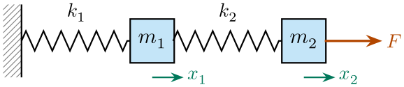
Figure 2.8. Two masses connected by springs to a fixed wall; x1,x2 are the displacements from equilibrium and F acts on the second mass.
To pass a polynomial of degree 2, p(x)=ax2+bx+c, through three points (xi,yi) we must solve a 3×3 system whose coefficient matrix is the Vandermonde matrixV=111x1x2x3x12x22x32,detV=(x2−x1)(x3−x1)(x3−x2). The determinant is nonzero exactly when the three x-values are distinct, which is why a unique interpolating parabola exists in that case (and not if two sample points share the same x). For (1,2), (2,3), (3,6): detV=1⋅2⋅1=2 and the solution is p(x)=x2−2x+3, see Figure 2.9.
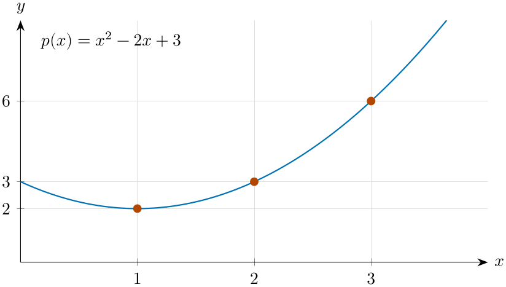
Figure 2.9. The unique parabola through (1,2), (2,3), (3,6). The Vandermonde determinant 2=0 guarantees that the three coefficients are determined uniquely by the three points.
Compute det(A) using the basket-weave method, where A=241102356.
Solution. Augmented matrix: 241102356241102. Downward: 2⋅0⋅6=0, 1⋅5⋅1=5, 3⋅4⋅2=24; sum 29. Upward: 1⋅0⋅3=0, 2⋅5⋅2=20, 6⋅4⋅1=24; sum 44. Hence det(A)=29−44=−15.
Problem 2: Row Replacement
Compute detA for A=12132526364949513.
Solution. Replacements (Property 2.2) do not change det. R2→R2−2R1, R3→R3−R1 and R4→R4−3R1 give 1000210030104111, upper triangular, so detA=1⋅1⋅1⋅1=1.
Problem 3: Scaling and Proportional Rows
Compute detA for A=14825103612.
Solution. Row 3 equals 2⋅row 2. Factoring 2 out of row 3 (Property 2.2) gives detA=2det144255366, and the new matrix has two equal rows, so its determinant is 0 (Property 2.2). Hence detA=0.
Problem 4: When Is the Determinant Zero?
Find all x for which detx111x111x=0.
Solution. Expanding along the first row, det=xx11x−111x+11x1=x(x2−1)−(x−1)+(1−x)=x3−3x+2. Try x=1: 1−3+2=0, so (x−1) is a factor, and x3−3x+2=(x−1)2(x+2). The matrix is singular exactly for x=1 (a double root) and x=−2, see Figure 2.10. This makes sense: for x=1 all three rows are equal, and for x=−2 every row sums to 0 (curiosity 1).
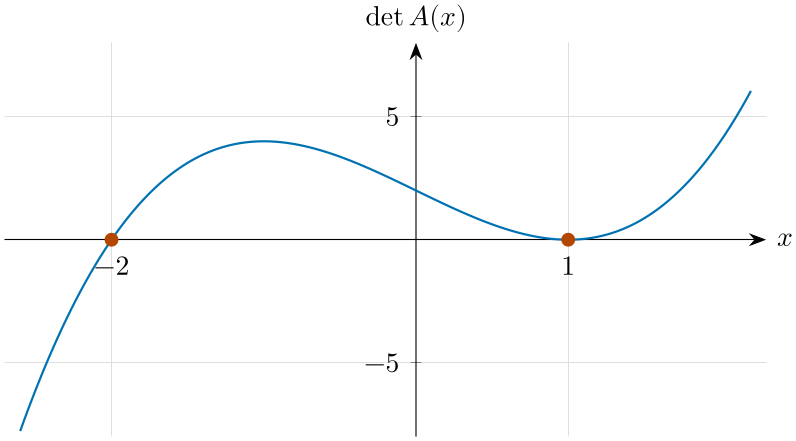
Figure 2.10. The determinant of Problem 5 as a function of x. It crosses zero at x=−2 and touches zero at the double root x=1; for exactly these values the matrix is singular.
Problem 5: A Parameter Makes the Matrix Singular
For which k is A=10kk102k1 not invertible?
Solution. Expanding along column 1: detA=110k1+kk12k=1+k(k2−2)=k3−2k+1=(k−1)(k2+k−1). So A is singular for k=1 and k=2−1±5 (≈0.618,−1.618), and invertible for every other k.
Problem 6: Inverse by the Adjugate
Find A−1 for A=102210341.
Solution.detA=1(1−0)−2(0−8)+3(0−2)=11=0. The cofactors are C=+1041−2031+2134−0241+1231−1034+0210−1220+1021=1−258−5−4−241,adjA=CT=18−2−2−545−41,A−1=11118−2−2−545−41.
Problem 7: Linear Matrix Equation
Solve AX+B=C for X, where A=[1324], B=[1001], C=[5768].
Solution.AX=C−B=[4767], so X=A−1(C−B). With detA=−2, A−1=−21[4−3−21]=[−2231−21],X=[−2231−21][4767]=[−8+76−27−12+79−27]=[−125−5211].
Check.AX=[−1+5−3+10−5+11−15+22]=[4767]. ✓
Problem 8: Determinant Algebra
A 3×3 matrix A has detA=2. Find
det(3A)
det(A−1)
det(A3)
det(ATA)
det(adjA)
Solution. Use det(kA)=kndetA, det(AB)=detAdetB, detAT=detA and detA−1=1/detA.
det(3A)=33⋅2=54 (all n=3 rows are scaled by 3).
det(A−1)=21.
det(A3)=(detA)3=8.
det(ATA)=detATdetA=2⋅2=4.
From Aadj(A)=det(A)I: detA⋅det(adjA)=23, so det(adjA)=8/2=4=(detA)n−1=4.
Find the inverses with the adjugate formula, and check with AA−1=I:
G=102210141, H=210031121.
Solve AX+B=C for X, where A=[2513], B=[1021], C=[7954].
Find all x with detx102x201x=0.
For which values of k is k101k101k singular? (These are exactly the k for which this tridiagonal matrix is not invertible; the same pattern appears in vibrating chains of masses.)
Let B=210−112013. Compute B−1 and verify BB−1=I. Then solve BX=102011210 for X.
Find the inverse of T=210121012 by Gauss–Jordan elimination.
The triangle with vertices (x1,y1), (x2,y2), (x3,y3) has area 21detx1x2x3y1y2y3111.
(a) Use this to find the area of the triangle with vertices (2,1), (6,2), (3,6).
(b) Are (0,1), (2,5), (3,7) collinear? (Collinear points give a triangle of area 0.)
A 3×3 matrix A has detA=−4. Find det(2A), det(A−1), det(A2), det(ATA−1) and det(adjA).
A chain wall–spring–m1–spring–m2–spring–wall has three springs of stiffness 100 N/m. A force 10 N acts on m1 only. Set up Kx=F and solve for the displacements.
The mesh equations of a circuit are 4I1−I2=6 and −I1+3I2=0. Solve for the currents by inverting the 2×2 matrix.
Chapter 3Systems of Linear Equations
After this chapter you can…
Write a linear system in matrix and augmented-matrix form. § 3.1
Explain with pictures why a system has no, one or infinitely many solutions. § 3.1.1
Solve square systems by the inverse method and Cramer’s rule. § 3.2
Solve any system by Gaussian and Gauss–Jordan elimination. § 3.2.3
Classify a system by the notion of the rank. § 3.2.4
Model circuits, statics, chemical reactions, traffic and heat flow as linear systems. § 3.3
Many problems in physics and engineering lead to equations that relate several unknown quantities. The simplest and best understood case is that of linear equations, in which each unknown appears only to the first power and is multiplied only by a constant, for example 2x−3y+z=5. Nonlinear equations, such as xy=1 or sinx+y2=0, arise just as naturally, for instance in the motion of a pendulum or in the flow of a fluid. In general, however, they are far more difficult to solve, and we do not study them in this course. Linear models nevertheless remain fundamental. Near a point of interest, a nonlinear problem can often be replaced by a linear approximation (linearization), so linear algebra is the workhorse behind much of applied mathematics.
In this chapter we study systems of linear equations: several linear conditions on several unknowns that must hold simultaneously. Such systems occur throughout science and engineering, for example in determining the currents in an electrical circuit, the forces in the members of a structure, or the proportions of ingredients in a mixture; each condition contributes one equation. In contrast to the nonlinear case, linear systems can be solved completely and systematically. By the end of the chapter you will be able to decide, for any such system, whether it has no solution, exactly one solution, or infinitely many solutions, and to find all of them.
Example: A Cookie Order
A bakery sells two types of cookies: chocolate chip (x) and oatmeal raisin (y). A customer orders 100 cookies for a total of $130. The prices are $1.50 and $1.00, respectively, so {x+y=100,1.5x+y=130.(total quantity)(total cost) Subtracting the first equation from the second gives 0.5x=30, so x=60 and y=100−60=40. Hence the solution is (x,y)=(60,40): the bakery must prepare 60 chocolate chip and 40 oatmeal raisin cookies.
Check.60+40=100 and 1.5⋅60+40=130. ✓
Geometrically, each equation describes a straight line in the xy-plane, and the solution is the point where the two lines cross (Figure 3.1). This picture will be the key to understanding all the possible outcomes of a system of linear equations.
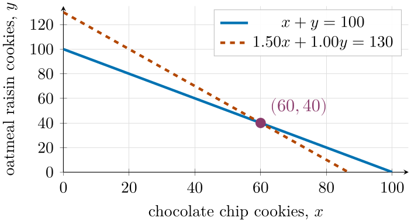
Figure 3.1. The order is the intersection point of two lines: 60 chocolate chip and 40 oatmeal raisin cookies.
A linear equation in n variables x1,x2,…,xn is an equation of the form a1x1+a2x2+⋯+anxn=b, where a1,a2,…,an are constants (called coefficients), b is a constant, and the variables x1,x2,…,xn appear only to the first power with no products, powers, or other functions applied to them.
Equation 1: 2x+3y−5z=7 is linear because it involves only first-degree terms in x,y,z with constant coefficients and no products or other functions.
Equation 2: x2+y−z=4 is nonlinear because of the x2 term, which has degree 2.
Equation 3: 4x−2y+sin(z)=0 is nonlinear because the sin(z) term involves a trigonometric function.
Equation 4: xy+3z=1 is nonlinear because the xy term is a product of variables.
Equation 5: 5x−4y+0z=2 is linear because it involves only first-degree terms, even though the coefficient of z is 0.
Common mistake
Linear in the unknowns, not in the numbers. What matters is how the variables enter. The equation πx+2y=e is linear (the coefficients π,2 and the constant e are just numbers), but xy=1, x2+y=0, sinx+y=0 and x1+y=3 are not. A product of two unknowns is not allowed even when it is hidden: z(x+1)=2 contains the term zx.
Quick Check 1
Which of the following are linear equations in x,y,z?
3x−2y+sin(2)z=7
3x+πy=e2(z−1)
Definition: System of Linear Equations
A system of linear equations with m equations in n variables x1,x2,…,xn is a collection of m equations, each of the form ai1x1+ai2x2+⋯+ainxn=bi,i=1,2,…,m, where aij are the coefficients, bi are the constants, and x1,x2,…,xn are the variables: ⎩⎨⎧a11x1+a12x2+⋯+a1nxn=b1a21x1+a22x2+⋯+a2nxn=b2⋮am1x1+am2x2+⋯+amnxn=bm
In matrix form the system reads AX=B, where A=a11a21⋮am1a12a22⋮am2⋯⋯⋱⋯a1na2n⋮amn,X=x1x2⋮xn,B=b1b2⋮bm are the m×ncoefficient matrix, the variable matrix and the constant matrix, respectively. The augmented matrix of the system is the m×(n+1) matrix [A∣B]=a11a21⋮am1a12a22⋮am2⋯⋯⋱⋯a1na2n⋮amnb1b2⋮bm.
Why we need it.When several conditions must hold at once we need a name for them as a package (a system) and a compact notation. The matrix form AX=B looks like the equation ax=b, so everything we know about matrices can be reused. The augmented matrix stores all the numbers of the system and hides the variable names, which is exactly what elimination needs.
A solution of a system with m equations in n variables is a set of values (s1,s2,…,sn) that satisfies each equation when substituted for x1,x2,…,xn. The solution set is the collection of all such solutions. A system that has at least one solution is called consistent; a system that has no solution is called inconsistent. The possible outcomes for the solution set are:
Unique solution: exactly one solution, a single point in Rn.
Infinitely many solutions: often described by one or more free variables.
No solution: the system is inconsistent.
Optional: why a system can never have exactly two solutions
Suppose X1=X2 are two different solutions of AX=B, so AX1=B and AX2=B. For every real number t, X1+t(X2−X1) is also a solution, because A(X1+t(X2−X1))=(1−t)AX1+tAX2=(1−t)B+tB=B. These solutions are all different (they fill the whole line through X1 and X2), so a system with two solutions automatically has infinitely many. Hence there are exactly three possibilities: no solution, one solution, or infinitely many. This is special to linear equations: the nonlinear equation x2=1 has exactly two solutions.
A linear equation ax+by=c (with a,b not both zero) is a line in the plane, and a linear equation ax+by+cz=d (with a,b,c not all zero) is a plane in space. A solution of a system is a point that lies on all these lines (planes) at the same time, so solving a system=finding the common intersection of lines or planes.
Two equations in two unknowns. Two lines in the plane can be positioned in exactly three ways (Figure 3.2): they cross in one point, they are parallel and distinct, or they coincide.
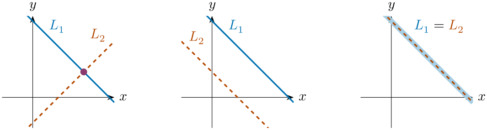
Figure 3.2. Two equations in two unknowns. (a) x+y=3,x−y=1: the lines cross at (2,1), the unique solution. (b) x+y=3,x+y=1: parallel lines, no solution. (c) x+y=3,2x+2y=6: the same line, infinitely many solutions(t,3−t), t∈R.
(a) One common point (b) No common point (c) All points common
Three equations in three unknowns. Now every equation is a plane. Figure 3.3 shows the three typical situations, one for each type of solution set.
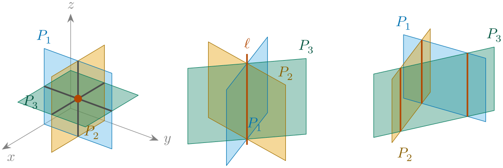
Figure 3.3. Three equations in three unknowns (each equation is a plane Pi). (a) The planes meet in a single point, the unique solution (for example x=1,y=1,z=1). (b) The planes share a common line ℓ, so there are infinitely many solutions with one free parameter (for example x=0,y=0,x+y=0: the line ℓ is the z-axis). (c) Every two planes meet in a line, but the three lines are parallel and the planes have no point in common (a “triangular prism”): no solution (for example x=0,y=0,x+y=1).
(a) One common point (b) A common line (c) Pairwise crossings only
Common mistake
Pairwise intersections are not enough. In Figure 3.3(c) every two planes meet in a line, yet the three planes have no common point (the “triangular prism”). Checking pairs is never a substitute for solving the whole system. Likewise, two equations in three unknowns can never have a unique solution: two planes meet in a line or not at all.
These are not the only possible pictures. For instance, two planes may be parallel (no solution), or all three planes may coincide (a whole plane of solutions). The precise classification in terms of ranks (see Section 3.2.4) is summarized in Table 3.1.
Table 3.1. Relative position of three planes aix+biy+ciz=di, i=1,2,3, and the type of solution set.
rank(A)
rank([A∣B])
Position of the three planes
Solutions
3
3
the planes meet in exactly one point
unique
2
2
the planes share a common line (or two planes coincide and the third crosses them)
infinitely many, 1 parameter
1
1
all three planes coincide
infinitely many, 2 parameters
2
3
a triangular prism, or two parallel planes cut by a third one
none
1
2
all planes parallel, at least two of them distinct
none
Remark
What is a plane in space? Think of a flat, infinitely thin sheet that extends without end in all directions, such as the floor or a wall of a room, extended forever.
Equation. A plane is the set of all points (x,y,z) satisfying a linear equation ax+by+cz=d,where a,b,c are not all 0. So each equation of a system in three unknowns describes one plane, and a solution of the system is a point lying on all these planes.
Examples.z=0 is the horizontal plane through the origin (the xy-plane), and x=0 is a vertical plane (the yz-plane). The equation x+y=1 has no z in it, so z can be anything: it is a vertical plane. This is why equations such as x=0 or x+y=1 in the caption below also describe planes, although they look like lines in the xy-plane.
We study planes in space systematically in Chapter 7. For now, we only need this picture.
A system with more equations than unknowns is called overdetermined: it asks more of the unknowns than they can usually give. In the plane (Figure 3.4), two lines already fix a point, and a third line must happen to pass through exactly that point. In space, three planes typically meet in a single point (case (a) of Figure 3.3), and a fourth plane must happen to pass through exactly that point. In both cases, an extra equation is satisfied only by luck, unless it is redundant, that is, a combination of the equations already present.
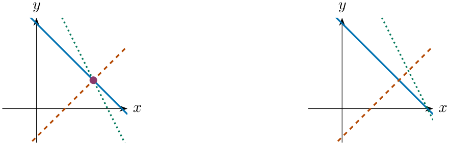
Figure 3.4. Three equations in two unknowns. (a) x+y=3, x−y=1, 2x+y=5 all pass through (2,1): the extra equation is redundant. (b) Replacing the last equation by 2x+y=6 makes the lines enclose a triangle with vertices (2,1), (3,0), (37,34): no point lies on all three.
(a) Consistent: three lines through (2,1)(b) Inconsistent: a small triangle, no common point
Remark
Counting equations does not decide the solution type.
Three equations in three unknowns can still have no unique solution if one equation is a combination of the others.
Four equations in three unknowns can have a unique solution if one of them is redundant (see the four-equation example in Section 3.2.3).
What decides is the rank (the number of independent equations), not the number of equations.
3.2 Methods for Solving Systems of Linear Equations#
There are many ways to solve a linear system, from the elementary methods of this chapter to the matrix factorizations (LU, QR, SVD) and iterative methods that engineers use for systems with thousands or millions of unknowns. The best choice depends on the size, structure and conditioning of the system (see the curiosities at the end of the chapter). Here we study the three basic methods: the inverse method, Cramer’s rule, and Gaussian and Gauss–Jordan elimination. Each gives a systematic way to find the whole solution set, with different advantages; Table 3.2 gives an overview.
Table 3.2. Comparison of the methods for solving AX=B.
Method
Applies to
Requires
Best used when
Inverse method
square systems (m=n)
det(A)=0
several right-hand sides share the same A; theoretical arguments
Cramer’s rule
square systems
det(A)=0
very small systems (2×2, 3×3); formulas that contain parameters
Gaussian elimination
any m×n system
nothing
general purpose; detects all three types of solution sets
Gauss–Jordan elimination
any m×n system
nothing
reading the solution directly from the RREF
MethodWhich method should I use?
The coefficient matrix is not square, its determinant is 0, or you are not sure: Gaussian or Gauss–Jordan elimination. It always works and tells you which of the three cases occurs.
The coefficient matrix is square and small (2×2 or 3×3), or the answer must be a formula containing a parameter: Cramer’s rule.
The coefficient matrix is square and stays the same for several right-hand sides: its inverse (or one elimination, reused).
In every case, substitute the answer back into the original equations.
The Inverse Method applies to a system of n linear equations in n variables, written in matrix form as AX=B, where A is the n×n coefficient matrix, X is the variable matrix, and B is the constant matrix. If A is invertible (i.e., det(A)=0), multiplying both sides of AX=B from the left by A−1 gives A−1AX=A−1B, that is, X=A−1B. Since A−1 is unique, the solution is unique.
(The 2×2 formula for A−1 and the adjugate formula for larger matrices are in Chapter 2.) Think of A−1 as the machine that undoesA: AX=B says “A turns the unknown X into the known B”, so applying A−1 to B recovers X. This is the matrix version of dividing ax=b by a; there is no “matrix division”, but multiplying by A−1 plays the same role.
In short: the inverse method gives an explicit formula, but it needs A square and invertible, and computing A−1 is lengthy for large n.
Example: Solving a System Using the Inverse Method
Solve the system of linear equations using the inverse method. {2x+y=5x+3y=8
Solution. Write the system in matrix form AX=B, where, A=[2113],X=[xy],B=[58].
Compute det(A)=(2⋅3)−(1⋅1)=6−1=5. Since det(A)=0, A is invertible.
Thus, the solution is x=57, y=511. Check:2⋅57+511=525=5 and 57+3⋅511=540=8. Geometrically, the solution is the point where the two lines meet (Figure 3.5).
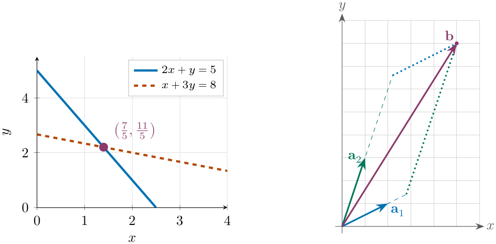
Figure 3.5. Two pictures of the same system 2x+y=5, x+3y=8. (a) Each equation is a line and the solution is their common point. (b) The vectors a1=(2,1), a2=(1,3) and b=(5,8): the system asks for the numbers x,y with xa1+ya2=b. Stretching a1 by 1.4 and a2 by 2.2 makes the two pieces add up exactly to b.
(a) row picture: two lines meet (b) column picture: 57a1+511a2=b
Common mistake
Multiply on the correct side, and do not invert needlessly. From AX=B one gets X=A−1B, never X=BA−1 (that would solve XA=B, and the sizes usually do not even match). Also, computing A−1 just to solve one system is wasteful: elimination solves it directly with less work and fewer rounding errors on a computer. The inverse pays off by hand when the same A must be used with several right-hand sides.
Cramer’s Rule provides a method to solve a system of n linear equations in n variables, written as AX=B, where A is an n×n coefficient matrix, X is the variable matrix, and B is the constant matrix. If det(A)=0, the system has a unique solution, and the solution for each variable xi is given by xi=det(A)det(Ai),i=1,2,…,n, where Ai is the matrix obtained by replacing the i-th column of A with B. For a system of two equations {a11x+a12y=b1a21x+a22y=b2 the rule gives x=a11a21a12a22b1b2a12a22=a11a22−a12a21b1a22−a12b2,y=a11a21a12a22a11a21b1b2=a11a22−a12a21a11b2−b1a21.Cases.
If det(A)=0, the system has exactly one solution, computed using the formula above.
If det(A)=0 and det(Ai)=0 for all i, the system may have infinitely many solutions or no solution, depending on consistency (determined by further analysis, e.g., row reduction).
If det(A)=0 and det(Ai)=0 for at least one i, the system has no solution (inconsistent).
Common mistake
Common mistakes with Cramer’s rule. Replace the columni of A (not a row) by B and leave the other columns where they are. Compute detAfirst: if it is 0, stop, because “xi=detAi/0” means nothing; use elimination instead to decide between no solution and infinitely many. Finally, detAi=0 for all i does not mean there is a solution: with detA=0 it only says that, if there is one, there are infinitely many.
In short: Cramer’s rule gives an explicit formula for each unknown, which makes it ideal for 2×2 and 3×3 systems and for formulas with parameters. It needs n+1 determinants (with cofactor expansion the work grows factorially with n) and is useless when detA=0; for larger systems use elimination.
Example: Solving a System Using Cramer’s Rule
Solve the system of linear equations ⎩⎨⎧2x+y+z=5x+3y+2z=84x+y+3z=9 using Cramer’s Rule.
Solution. Write the system as AX=B, where A=214131123,X=xyz,B=589. Compute det(A) using row 1: det(A)=2(3⋅3−2⋅1)−1(1⋅3−2⋅4)+1(1⋅1−3⋅4)=8=0, so the system has a unique solution. Form A1,A2,A3: A1=589131123,A2=214589123,A3=214131589. Their determinants: det(A1)=5(3⋅3−2⋅1)−1(8⋅3−2⋅9)+1(8⋅1−3⋅9)=10,det(A2)det(A3)=2(8⋅3−2⋅9)−5(1⋅3−2⋅4)+1(1⋅9−8⋅4)=14,=2(3⋅9−8⋅1)−1(1⋅9−8⋅4)+5(1⋅1−3⋅4)=6. Hence, x=det(A)det(A1)=810=45,y=det(A)det(A2)=814=47,z=det(A)det(A3)=86=43.
A nutritionist wants to create a meal for a patient using three different food sources:
Food A: 200 calories, 10g protein, 20g carbs
Food B: 300 calories, 15g protein, 25g carbs
Food C: 150 calories, 5g protein, 10g carbs
The nutritionist needs the total meal to contain exactly 1100 calories, 50g of protein, and 90g of carbs. How many portions of each food source are needed?
Solution. Let x,y, and z be the number of portions of Foods A, B, and C, respectively. The nutritional requirements yield the system: 200x+300y+150z=110010x+15y+5z=5020x+25y+10z=90⟹4x+6y+3z=22⟹2x+3y+z=10⟹4x+5y+2z=18 We can now solve this system using Cramer’s Rule. The coefficient matrix, A, contains the coefficients of the variables, and the constant vector, B, contains the numbers on the right side of the equals sign. A=424635312,B=221018. The determinant of the coefficient matrix equals det(A)=43512−62412+32435=4(3⋅2−1⋅5)−6(2⋅2−1⋅4)+3(2⋅5−3⋅4)=−2. Since det(A)=−2=0, the system has a unique solution.
The nutritionist needs 1 portion of Food A, 2 portions of Food B, and 2 portions of Food C to meet the patient’s nutritional requirements. Check: calories 200+600+300=1100; protein 10+30+10=50; carbs 20+50+20=90.
3.2.3 Gaussian Elimination and Gauss–Jordan Methods#
Two systems of linear equations are equivalent if they have the same solution set. The idea behind Gaussian Elimination and Gauss–Jordan Elimination is to transform a system of linear equations into an equivalent system that is easier to solve using elementary row operations.
Definition
Elementary Row Operations: The following operations on the augmented matrix of a system produce an equivalent system:
Row Interchange: Swap two rows, denoted as Ri↔Rj.
Row Scaling: Multiply a row by a nonzero scalar k, denoted as kRi→Ri.
Row Addition: Add a multiple of one row to a different row (i=j), denoted as Ri+kRj→Ri.
Two matrices A and B are row-equivalent, A∼B, if one can be obtained from the other by a finite sequence of these operations. To track operations, we use the above notations beside each step. Performing these operations on an augmented matrix[A∣B] transforms it into a new augmented matrix corresponding to an equivalent system.
Optional: Why the solution set does not change, and what elimination does to the picture
Every row operation can be undone.
A swap is undone by the same swap.
Scaling by k=0 is undone by scaling with 1/k.
Ri+kRj→Ri is undone by Ri−kRj→Ri.
Therefore a solution of the old system is a solution of the new one, and vice versa: row operations do not change the solution set.
Two remarks.
Scaling by k=0 is forbidden: it cannot be undone, and it would destroy an equation.
A combined step such as 3R2−2R1→R2 is allowed, because it is row scaling by 3=0 followed by row addition.
The geometric picture (Figure 3.6). Every line through the intersection point of two lines is a combination of their equations. So a row operation only rotates a line about the solution, and the solution itself never moves. Elimination uses this freedom to turn the lines until they are horizontal and vertical, where the intersection can simply be read off.
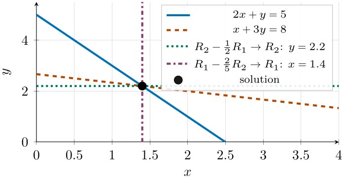
Figure 3.6. What elimination does to the picture. Starting from the lines 2x+y=5 and x+3y=8, the step R2−21R1→R2 replaces the second line by the horizontal line 2.5y=5.5, i.e. y=2.2; then R1−52R2→R1 replaces the first line by the vertical line 2x=2.8, i.e. x=1.4. All lines pass through the same point (1.4,2.2): row operations rotate the lines about the solution, which never moves.
Example: Elementary Row Operations
Consider the augmented matrix [A∣B]=1022583694710. Apply one of each elementary row operation:
Row Interchange (R1↔R3): 2018529631074.
Row Scaling (51R2→R2) on the original matrix: 102218356945710.
Row Addition (R3−2R1→R3) on the original matrix: 100254363472.
Definition: Row Echelon Form (REF) and Reduced Row Echelon Form (RREF)
A matrix is in row echelon form (REF) if
all rows consisting entirely of zeros are at the bottom;
the first nonzero entry of each nonzero row (its leading entry or pivot) is 1 (a leading 1);
the pivot of each nonzero row is to the right of the pivot in the row above it.
A matrix is in reduced row echelon form (RREF) if it is in REF and, in addition, each column containing a pivot has zeros in all other entries.
These forms are achieved using elementary row operations and are used to solve systems of linear equations by transforming the augmented matrix into a simpler equivalent form. The pivots of a matrix in REF form a “staircase” going down and to the right (Figure 3.7).
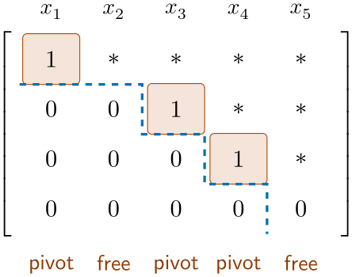
Figure 3.7. A matrix in row echelon form (∗ = any number). The boxed entries are the pivots; below the dashed staircase everything is 0. Columns with a pivot correspond to pivot (basic) variables, columns without a pivot to free variables.
Remark
Why a staircase? Each nonzero row starts further to the right than the row above. So the last nonzero row involves the fewest variables.
Solve the last row first.
Substitute upward (back-substitution).
The staircase is the shape of a system that is “already half solved”.
A word on “pivot”.
Definition. While eliminating, the entry you are about to use is called the pivot, even before it has been scaled to 1 (the boxed entries in the worked examples, such as −1 or 5).
Order of steps. The definition of REF asks for leading 1’s, so scaling is the last step in each column.
Nonzero. A pivot must be a nonzero entry. In a skipped column there is no pivot at all.
Other books. Some books do not require leading 1’s. The pivot columns, the rank and the solution set are the same either way.
Example: Identifying Row Echelon and Reduced Row Echelon Forms
Consider the following matrices (pivots are boxed):
100210040350 is in row echelon form (all pivots equal 1, pivots shift to the right, the zero row is at the bottom), but it is not in reduced row echelon form, because the entry 2 above the second pivot is not zero.
100010001234 is in reduced row echelon form (it is in REF, and every pivot column has zeros above and below the pivot).
[011023] is not in REF (the pivot in row 2 is to the left of the pivot in row 1).
Remark
Uniqueness of the RREF.
The RREF is unique. Every matrix has exactly one reduced row echelon form, regardless of the sequence of elementary row operations used to reach it.
The REF is not unique. Different sequences of operations may lead to different row echelon forms. For example, the matrices [102134] and [1001−54] are both in REF and are row-equivalent (use R1→R1−2R2), but only the second one is in RREF.
This is why the RREF is the “canonical” form: two matrices of the same size are row-equivalent if and only if they have the same RREF.
Quick Check 2
Each matrix below is the coefficient matrix of a system in x1,x2,… For each one, decide whether it is in REF and whether it is in RREF, and say which variables are free. If it is not in REF, which row operation fixes it?
1003000102−10100211030
Definition
A pivot column is a column that contains a pivot. A pivot variable, also known as a basic variable, is a variable that corresponds to a pivot column in a matrix that is in row-echelon form (REF) or reduced row-echelon form (RREF).
A free variable in a system of linear equations is a variable that is not a pivot variable in the row-echelon form (REF) or reduced row-echelon form (RREF) of the augmented matrix. Free variables arise when there are fewer pivot columns than the number of variables; if the system is consistent, the free variables can take any value, leading to infinitely many solutions.
To solve a system of linear equations using Gaussian elimination, we apply the following algorithm.
MethodSolving a linear system by Gauss / Gauss–Jordan elimination
Goal. Solve Ax=b by simplifying the augmented matrix [A∣b] with row operations: swap two rows, scale a row, or add a multiple of one row to another.
Write the augmented matrix[A∣b].
Go through the columns from left to right. In each column, look at the entries from the current row downward.
If they are all 0, the column has no pivot, and its variable is free. Move to the next column and stay on the same row.
Otherwise, swap rows if needed so that a nonzero entry sits in the current row. This entry is the pivot. Scale the row so the pivot becomes 1.
Clear below the pivot. Subtract suitable multiples of the pivot row from the rows underneath, so every entry below the pivot becomes 0. Then move down one row and right one column.
Stop when you run out of rows or columns. The matrix is now in row-echelon form.
Check for a contradiction. If some row looks like [0⋯0∣d] with d=0, the system has no solution. Stop here.
Read off the solution. Choose one of two finishing routes.
Gauss: give each free variable a parameter (s,t,…), then use back-substitution, solving from the last nonzero row upward.
Gauss–Jordan: also clear the entries above each pivot, working from the last pivot upward. The matrix becomes the reduced row-echelon form, so each pivot variable can be read off directly, with the free variables as parameters.
Outcome. Every variable column has a pivot ⇒unique solution. A free variable exists and there is no contradiction ⇒infinitely many solutions.
Once the augmented matrix [A∣B] of a system has been brought to echelon form, the solution type can be read off directly, without solving anything. Look for two things: whether there is a row of the form [0⋯0∣c] with c=0, and whether every variable column contains a pivot. Table 3.3 summarizes the three possible outcomes.
Table 3.3. Reading the solution type from the echelon form (for Gauss–Jordan the same rules apply to the RREF).
In the echelon form of [A∣B]
Meaning
Solutions
a row [0⋯0∣c] with c=0
the equation 0=c is a contradiction
none (inconsistent)
no such row, and every variable column has a pivot
no free variables
exactly one
no such row, and some variable column has no pivot
each such column gives a free variable
infinitely many, one parameter per free variable
Common mistake
Common mistakes in elimination.
Write down every step: errors hide in mental multi-step arithmetic.
Ri+kRj→Ri changes only row i; row j stays as it was. If you perform several operations in one step, use the old version of the row you are adding.
Never multiply a row by 0 (this destroys an equation), and do not replace a row by a multiple of itself with factor 0, e.g. R2−R2→R2.
Always check your answer in the original equations, not in the reduced ones: an early slip is carried into every later matrix, and the reduced system can look perfectly consistent.
Gaussian elimination stops at the staircase and finishes by back-substitution; it needs about 31n3 multiplications. Gauss–Jordan elimination continues to the RREF; it needs about 21n3, half as many again, but the answer can be read off directly. By hand with few unknowns Gauss–Jordan is convenient; on a computer Gaussian elimination (LU decomposition) is the standard.
Numerical practice
On a computer one usually chooses as pivot the entry of largest absolute value in the column instead of the first nonzero one, because this reduces rounding errors. For hand calculations with small integers, any convenient nonzero pivot is fine.
Zero in the pivot position. If the entry where a pivot is wanted is 0 but some entry below it is nonzero, swap rows to bring a nonzero entry up (second example below). If all entries from that position downward are 0, the column cannot produce a pivot: skip it and continue with the next column in the same row (first example below). The variable of a skipped column is a free variable.
Example: A Zero Pivot, Skipping a Column
Solve the system ⎩⎨⎧x+2y+z=42x+4y+3z=9x+2y+2z=5
Solution. The augmented matrix is 121242132495.Step 1: Pivot in column 1 (the boxed 1). Eliminate below: R2−2R1→R2,R3−R1→R3100200111411.Step 2: Look at column 2 in rows 2 and 3: both entries are 0, so this column cannot produce a pivot. We skip it (so y will be a free variable) and look for the pivot in column 3, row 2, which is already 1. Eliminate below: R3−R2→R3100200110410. The matrix is in row-echelon form. The pivots are in columns 1 and 3, so x and z are pivot variables and y is free (a free variable need not be the last one). The consistent system has infinitely many solutions.
Back-substitution: let y=t, t∈R. From row 2: z=1. From row 1: x+2t+1=4, so x=3−2t. The general solution is (x,y,z)=(3−2t,t,1),t∈R. Geometrically, the three planes share a common line, as in Figure 3.3(b).
Common mistake
Describing infinitely many solutions. The answer must show all variables in terms of the parameters; “w is free” alone is not an answer. The parameters belong to the free variables (columns without a pivot), and a free variable is not necessarily the last one (see the example with a skipped column). Different parametrizations describe the same set: (5−2t,−5+2t,4−t,t) and, with t=1+u, (3−2u,−3+2u,3−u,1+u) are the same line.
Example: A Zero in the Pivot Position (Row Swap)
Solve the system ⎩⎨⎧y+2z=4x+y+z=42x+y+3z=7
Solution. The first equation contains no x, so the entry in position (1,1) is 0; the entry below it is nonzero, so we swap R1↔R2: =2mu 012111213447R1↔R2102111123447R3−2R1→R310011−112144−1 =2mu R3+R2→R310011012344331R3→R3100110121441.Back-substitution:z=1, then y=4−2z=2, then x=4−y−z=1. The solution is (x,y,z)=(1,2,1), a unique solution (three pivots).
Check.2+2=4, 1+2+1=4, 2+2+3=7. ✓
Example: Gaussian Elimination
Solve the system ⎩⎨⎧x+y+z=42x+y−z=1x+2y+3z=73x+2y=5
Solution. We reduce the augmented matrix: =2mu 121311221−1304175R2−2R1→R2R3−R1→R3R4−3R1→R410001−11−11−32−34−73−7−R2→R21000111−1132−3473−7 =2mu R3−R2→R3R4+R2→R41000110013−1047−40−R3→R31000110013104740.Back-substitution:z=4⟹y=7−3(4)=−5⟹x=4−(−5)−4=5.
Gauss–Jordan elimination continues from REF to RREF: =2mu 1000110013104740R2−3R3→R2R1−R3→R11000110000100−540R1−R2→R11000010000105−540. Thus, (x,y,z)=(5,−5,4).
Example: Solving a 4×3 System with no Solution Using Gaussian Elimination
Solve the system ⎩⎨⎧x+y+z=42x+y−z=1x+2y+3z=7x+3y+4z=10.
Solution. We reduce the augmented matrix: =2mu 121111231−13441710R2−2R1→R2R3−R1→R3R4−R1→R410001−1121−3234−736−R2→R21000111213234736 =2mu R3−R2→R3R4−2R2→R41000110013−1−347−4−8−R3→R310001100131−3474−8R4+3R3→R41000110013104744. The last row gives 0=4, which is inconsistent. Thus, the system has no solution. Geometric interpretation: The first three planes intersect at the single point (5,−5,4), but the fourth plane does not pass through it (5−15+16=6=10).
Example: Solving a 3×4 System (Infinitely Many Solutions)
Solve the system ⎩⎨⎧x+y+z+w=42x+y−z+w=1x+2y+3z+w=7
Solution. We reduce the augmented matrix: =2mu 1211121−13111417R2−2R1→R2R3−R1→R31001−111−321−104−73−R2→R2100111132110473 =2mu R3−R2→R310011013−111−147−4−R3→R3100110131111474.
General Solution in vector form (t∈R): xyzw=particular solution5−540+tdirection vector−22−11,t∈R. The solution set is a line in R4.
Intuition
Free variables are degrees of freedom. Every pivot is one independent condition that determines one variable; the variables without a pivot are left unconstrained. The three equations of this example give only three conditions on four unknowns, so exactly one unknown (w) can be chosen freely and the others follow: the solutions form a line, a one-parameter family. In general the number of free variables is n−rank(A).
The rank of a matrix A, denoted rank(A), is the number of nonzero rows in the row-echelon form (REF) of A (equivalently, the number of pivots), or the dimension of the row space (or column space) of A. For an m×n matrix, 0≤rank(A)≤min(m,n).
The Fundamental Theorem of Systems of Linear Equations (also known as the Kronecker–Capelli or Rouché–Capelli theorem) states that for a system of linear equations AX=B, where A is an m×n coefficient matrix, X is an n×1 variable matrix, and B is an m×1 constant matrix:
The system has a solution if and only if rank(A)=rank([A∣B]).
If rank(A)=rank([A∣B])=n, the system has a unique solution.
If rank(A)=rank([A∣B])=r<n, the system has infinitely many solutions with n−r free variables.
If rank(A)<rank([A∣B]), the system has no solution (inconsistent).
The decision procedure is summarized in Figure 3.8. (Note that always rank(A)≤rank([A∣B])≤rank(A)+1, so only these two cases can occur.)
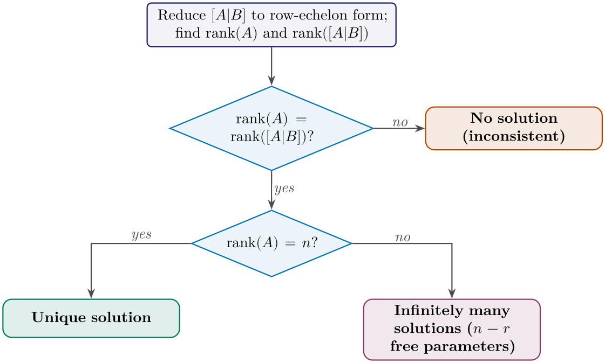
Figure 3.8. Classifying the system AX=B (n = number of variables, r=rank(A)).
Square systems. For an n×n matrix, rank(A)=n exactly when detA=0. So for a square system detA=0 gives a unique solution for every B, while detA=0 leaves only “none” or “infinitely many”, and the ranks decide which.
Quick Check 3
A system of 3 equations in 5 unknowns has rank(A)=rank([A∣B])=3. How many free parameters does the solution have? Can the solution be unique?
Optional: why the rank criterion works
rank(A) counts the independent columns of A. Adding the column B to form [A∣B] either leaves the rank unchanged (then B is built from the columns of A, i.e. the system has a solution: this is the column picture of Figure 3.5) or raises it by one (B points in a genuinely new direction and cannot be built: no solution). If rank(A)=n the columns are independent and there is only one way to build B; if rank(A)<n some column is a combination of the others and there are many ways, one free parameter for each missing rank.
Common mistake
Compare rank(A) with rank([A∣B]), and with n. The constants column counts when you decide whether a row is zero: the row [000∣7] is nonzero in [A∣B] but zero in A. And rank(A)=rank([A∣B]) proves only that a solution exists; whether it is unique depends on comparing the common rank with the number of unknowns n.
Example: Finding the Rank of a 3×4 Matrix
Find the rank of the matrix 1211121−13111 by reducing it to row-echelon form.
Solution. We reduce the matrix to row-echelon form: =2mu 1211121−13111R2−2R1→R2R3−R1→R31001−111−321−10−R2→R2100111132110 =2mu R3−R2→R310011013−111−1−R3→R3100110131111.
The matrix is now in row-echelon form. Since there are 3 nonzero rows (pivots), rank(A)=3.
A homogeneous system of linear equations is a system of the form AX=0, where A is an m×ncoefficient matrix, X is the n×1variable matrix, and 0 is the m×1 zero matrix. Key properties:
A homogeneous system is always consistent, as X=0 (the trivial solution) is a solution.
If rank(A)=n, the system has only the trivial solution (X=0).
If rank(A)<n, the system has infinitely many solutions, including the trivial solution and nontrivial solutions, with n−rank(A) free variables.
In particular, if there are fewer equations than unknowns (m<n), then rank(A)≤m<n, so there is always a nontrivial solution.
Geometrically, every equation of a homogeneous system is a line (or plane) through the origin, so the origin always belongs to the solution set.
Common mistake
Homogeneous does not mean “only the trivial solution”. Consider a homogeneous system Ax=0 of m equations in n unknowns, so the coefficient matrix A has size m×n. The zero solution x=0 always exists, but the interesting question is whether there are others.
Criterion. Nontrivial solutions exist if and only if rank(A)<n. Here rank(A) is the number of pivots of A (the number of independent equations), so rank(A)<n means that some unknown is free.
Fewer equations than unknowns (m<n) always guarantees nontrivial solutions, because rank(A)≤m<n.
At least as many equations as unknowns (m≥n) does not rule them out, because the equations may be dependent. For example, x+y=0,2x+2y=0 has m=n=2, yet (1,−1) is a nontrivial solution.
Square system (m=n): nontrivial solutions exist if and only if detA=0.
Example: A Homogeneous System
Solve {x+y+z=0x−y+3z=0
Solution. The system has m=2 equations in n=3 unknowns (x,y,z). Since m<n, it has a nontrivial solution. The coefficient matrix (the right-hand side stays 0 throughout) is reduced as follows: =2mu [111−113]R2−R1→R2[101−212]−21R2→R2[10111−1]. The pivots are in columns 1 and 2, so z is free. Let z=t. Then y=t and x=−y−z=−2t. The solutions are (x,y,z)=(−2t,t,t)=t(−2,1,1),t∈R. The two planes pass through the origin and meet in the line through the origin with direction (−2,1,1).
Quick Check 4
A homogeneous system has 4 equations and 5 unknowns. Must it have a nontrivial solution?
A model is a linear system when the unknown quantities are tied together by laws that are linear in those unknowns, so that each law gives one equation a1x1+⋯+anxn=b with known constants ai,b. Typical sources are:
Electric circuits: Kirchhoff’s voltage and current laws together with Ohm’s law, for the unknown loop currents or node voltages;
Structures: force and moment equilibrium at each joint, for the unknown bar forces and reactions;
Networks: conservation of cars, water or heat at each node, for the unknown flows;
Chemistry: conservation of each kind of atom, for the unknown coefficients of a reaction equation;
Data fitting: requiring a curve y=c0+c1x+⋯+ckxk to pass through given points, for the unknown coefficients cj (the equations are linear in the cj, even though the curve itself is not a line).
The mathematics of this chapter then has a direct meaning for the model:
Unique solution: the laws determine all unknowns.
Free variable: the laws do not determine that unknown. It may be chosen freely (a design freedom), or it reflects information that is missing from the model, such as an unmeasured quantity.
Inconsistent system: no values of the unknowns satisfy all the laws at once. Either the data contradict each other (for example, because of measurement error) or the model is stated incorrectly.
Kirchhoff’s voltage law (KVL). Going once around any closed loop, the voltage rises equal the voltage drops: loop∑v=0⟺∑Vsources=∑RI. Here
v is the voltage change across one element of the loop, counted as positive for a rise and negative for a drop (in volts);
Vsources denotes the voltages of the sources (batteries) in the loop, each counted as positive if it pushes the current in the direction we travel around the loop;
R is the resistance of a resistor in the loop (in ohms), and I is the current through it (in amperes), so by Ohm’s law RI is the voltage drop across that resistor.
The second form follows from the first by moving the drops RI to the other side.
Mesh currents. Assign a clockwise current Ik to each of the ℓ independent loops (meshes). A resistor Rjk shared by meshes j and k carries the difference of the two mesh currents, so by Ohm’s law its voltage drop in mesh k is V=Rjk(Ik−Ij). (A resistor that belongs to mesh k only carries Ik; this is the same formula with Ij=0.)
The system. KVL for mesh k reads j∑Rkj(Ik−Ij)=Vk⟺RkkIk−j=k∑RkjIj=Vk,k=1,…,ℓ, where Rkk is the total resistance around mesh k and Vk is the net source voltage in mesh k (with + if it pushes clockwise). Together, the ℓ equations form an ℓ×ℓ linear system RI=V.
Example: A Two-Loop Circuit
In Figure 3.9a two batteries (12 V and 6 V) and three resistors (R1=2Ω, R2=3Ω, shared R3=4Ω) form two loops. The shared resistor carries I1−I2, so the voltage law gives {2I1+4(I1−I2)=123I2+4(I2−I1)=6⟺{6I1−4I2=12−4I1+7I2=6. Here detA=42−16=26=0, and Cramer’s rule gives I1=26126−47=26108≈4.15A,I2=266−4126=2684≈3.23A. The current in the shared resistor is I1−I2=1312≈0.92 A.
Check (energy balance). The batteries deliver 12⋅1354+6⋅1342=13900≈69.2 W, and the resistors dissipate 2I12+3I22+4(I1−I2)2=13900 W, the same.
For a network of positive resistors the matrix of the mesh equations is always invertible. Physically this says that the currents are completely determined by the sources: a circuit cannot “choose” between two different current patterns. If such a system ever turns out singular, the circuit has been drawn incorrectly (for example a loop of ideal wires and ideal sources).
Equilibrium. Consider a body that is at rest and small enough to be treated as a point (a joint, or a hanging load). It is in equilibrium when the vector sum of all forces acting on it is zero: i∑Fi=0⟺i∑Fi,x=0,i∑Fi,y=0(and ∑iFi,z=0 in space). Each component gives one scalar equation.
Cable forces. A cable can only pull. If cable i makes the known angle θi with the horizontal, its force on the joint has magnitude Ti≥0 (the tension) and points along the cable, away from the joint: Fi=Ti[cosθisinθi], where the signs of the components depend on the direction in which the cable leaves the joint. A load of weight W contributes the known force [0−W].
Why the equations are linear. The angles θi are fixed by the geometry of the structure, so cosθi and sinθi are known constants. The unknowns are the tensions Ti, and they appear only to the first power: i∑Ticosθi=0,i∑Tisinθi=W. So each component of the equilibrium condition is a linear equation in T1,T2,… with coefficients cosθi,sinθi.
Example. A load W hangs from two cables, which leave the joint to the left and to the right at angles θ1 and θ2 above the horizontal. Then [−cosθ1sinθ1cosθ2sinθ2][T1T2]=[0W]. The determinant of the coefficient matrix is −sin(θ1+θ2), which is nonzero when θ1+θ2 is not a multiple of π. In that case T1=sin(θ1+θ2)Wcosθ2,T2=sin(θ1+θ2)Wcosθ1.
Remark. If a computed tension is negative, the cable would have to push, which a cable cannot do. In that case the assumed configuration is impossible (the cable goes slack).
Example: A Hanging Load
A load of weight W=100 N hangs from two cables that make angles 30∘ (left) and 60∘ (right) with the horizontal (Figure 3.9b). Let T1,T2 be the tensions. Horizontal and vertical equilibrium give {−T1cos30∘+T2cos60∘=0T1sin30∘+T2sin60∘=100⟺{−23T1+21T2=021T1+23T2=100. From the first equation T2=3T1; substituting, 21T1+23T1=100, so T1=50 N and T2=503≈86.6 N. Check: the vertical components are 50⋅21+86.6⋅23=25+75=100 N.
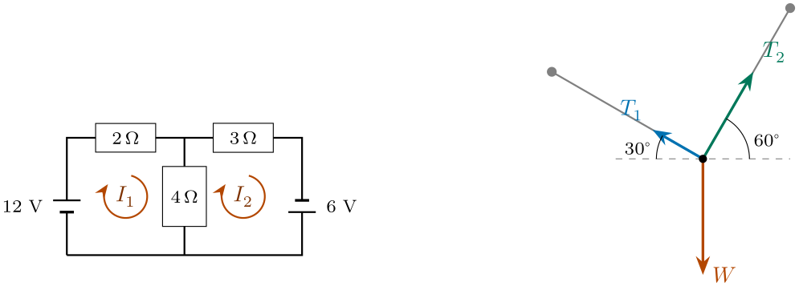
Figure 3.9. (a) A two-loop circuit; both batteries drive their mesh current clockwise (the long plate is the positive terminal), and the middle resistor carries I1−I2. (b) Free-body diagram of the knot where the load hangs: three forces in equilibrium, T1=50 N, T2≈86.6 N, W=100 N.
Balanced equation. A chemical equation is balanced when every kind of atom occurs equally often on both sides. Write the reaction with unknown whole-number coefficients x1,…,xn in front of the n substances (reactants on the left, products on the right).
The equations. Let aij be the number of atoms of element i in one molecule of substance j. Balancing element i gives one equation reactants j∑aijxj=products j∑aijxj. Moving everything to the left, we count products with a minus sign, which gives one linear equation ∑j±aijxj=0 for each element i. For m elements this is a homogeneous linear system Ax=0 with m equations and n unknowns.
Why a free parameter is expected. Multiplying all coefficients by the same number c keeps every atom count balanced, so if x is a solution, then so is cx. Only the ratios of the coefficients matter. Hence for a genuine reaction the system has a nontrivial solution, and the solution set is a line (or a higher-dimensional space) through the origin. The zero solution is chemically meaningless.
If m<n, a nontrivial solution is guaranteed, as for every homogeneous system.
If m≥n, one exists only because the equations are dependent, which is the case for a reaction that can really occur.
Reading the answer. We choose the free parameter so that all coefficients are the smallest positive integers. If the solution has more than one free parameter, the equation can be balanced in several independent ways (it combines several reactions), and the choice is not unique.
Example: Burning Ethane
Balance x1C2H6+x2O2→x3CO2+x4H2O. Counting atoms of each kind: ⎩⎨⎧C:H:O:2x1=x36x1=2x42x2=2x3+x4260002−10−20−2−1000. Three equations in four unknowns: rank(A)=3<4, so there is one free variable. Let x1=t. Then x3=2t, x4=3t and x2=22x3+x4=27t. The smallest positive integer solution is t=2: 2C2H6+7O2→4CO2+6H2O. The free parameter is the size of the batch: doubling every coefficient gives the same reaction.
Network. A flow network consists of junctions (nodes) joined by branches (roads, pipes, wires). Each branch j carries an unknown flowxj (cars per hour, liters per second, amperes, …) in a chosen reference direction. Flow may also enter or leave the network at some junctions through known external sources and sinks.
Conservation law. In a steady state nothing is created, destroyed or stored at a junction. For every junction, branches into the junction∑xj+(external inflow)=branches out of the junction∑xj+(external outflow). Each junction therefore gives one linear equation in the unknown flows, with coefficients 0,±1 and a known right-hand side. For N junctions and E branches we obtain a linear system of N equations in E unknowns.
Sign convention. If a computed flow is negative, the actual flow runs opposite to the chosen reference direction. For a one-way street or a valve we additionally require xj≥0.
What to expect.
Consistency. Adding all N equations, every internal flow appears once with + and once with − and cancels. What remains is total external inflow=total external outflow. If this fails, the system is inconsistent (the data are wrong).
Redundancy. When this holds, one equation is a combination of the others. For a connected network, rank=N−1.
Free variables. The number of free variables is E−(N−1), the number of independent loops. A free variable is a circulation: a flow that goes around a loop and changes no junction balance. Conservation alone cannot determine it, so extra information (a measurement on one branch) is needed.
Example: A Traffic Ring
Four one-way streets form a ring (Figure 3.11a); x1,…,x4 are the flows (cars per hour) on the streets AB,BC,CD,DA, and cars enter and leave at the junctions as drawn. “In = out” at each junction: ⎩⎨⎧A:B:C:D:x4+300=x1+100x1+200=x2+300x2+150=x3+250x3=x4⟺⎩⎨⎧x1−x4=200x1−x2=100x2−x3=100x3−x4=0. The equations are consistent (the last three add up to x1−x4=200), but only three of them are independent, so one variable is free. With x4=t: (x1,x2,x3,x4)=(t+200,t+100,t,t),t≥0. The conservation law cannot tell how many cars circulate around the ring (t). One traffic count on any single street fixes the whole pattern: if 80 cars per hour are counted on DA, then (x1,x2,x3,x4)=(280,180,80,80).
Model. Consider a thin uniform rod whose two ends are held at fixed temperatures T0 and Tn+1, with no heat sources along the rod. Choose n equally spaced interior grid points and let T1,…,Tn be the (unknown) temperatures there. The state is steady when the temperatures no longer change in time.
The equations. In the steady state, the temperature at an interior grid point is the average of the temperatures at its two neighbors (this is the standard finite-difference approximation of the heat equation): Ti=21(Ti−1+Ti+1)⟺−Ti−1+2Ti−Ti+1=0,i=1,…,n. The values T0 and Tn+1 are known, so they are moved to the right-hand side of the first and the last equation. This gives an n×n linear system KT=b,K=2−1−12⋱−1⋱−1⋱2,b=T00⋮0Tn+1, where the blank entries of K are zeros. The number of unknowns equals the number of grid points.
Sparsity. Row i of K involves only the neighbors of point i, so it has at most 3 nonzero entries, no matter how large n is. Such a matrix is called sparse. In a plate (two dimensions) a point has four neighbors, and in a solid (three dimensions) six, so each row has at most 5 or 7 nonzero entries.
Why size is the challenge. Each equation is simple; the difficulty is the number of unknowns. Real models of heat flow, stress or fluid flow use n from thousands to millions. For n=106 the matrix has 1012 entries, which as a full array would need about 8 terabytes of memory (at 8 bytes per number), while only about 3⋅106 entries are nonzero. Elimination that treats K as a full matrix needs a number of operations of order n3, which is far too many. Efficient methods store only the nonzero entries and exploit the zeros; for this tridiagonal K, elimination needs only about n operations.
Example: A Rod with Fixed End Temperatures
A rod is held at 100∘C at the left end and 0∘C at the right end and divided into four equal parts. The temperatures T1,T2,T3 at the three interior points satisfy “each is the average of its neighbors”: ⎩⎨⎧2T1−T2=100−T1+2T2−T3=0−T2+2T3=0⟹T3=21T2,T1=23T2,2⋅23T2−T2=100, so T2=50, T1=75, T3=25: the temperature falls linearly from 100∘C to 0∘C (Figure 3.10). With n interior points the matrix is n×n with 2 on the diagonal and −1 next to it, and it is always invertible, so the temperature profile is unique.
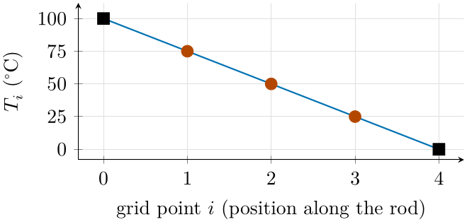
Figure 3.10. Steady-state temperatures along the rod. The squares are the prescribed end temperatures; the dots are the unknowns T1,T2,T3 obtained from the linear system.
To find the parabola p(x)=ax2+bx+c through three measured points, require p(xi)=yi. Each point gives one equation, linear in the unknown coefficientsa,b,c (the numbers xi2,xi,1 are the coefficients).
Example: A Parabola Through Three Points
Fit p(x)=ax2+bx+c through (0,1), (1,0), (2,3): ⎩⎨⎧c=1a+b+c=04a+2b+c=3⟹{a+b=−14a+2b=2⟹a=2,b=−3,c=1. So p(x)=2x2−3x+1 (Figure 3.11b). The coefficient matrix is a Vandermonde matrix, with det=(1−0)(2−0)(2−1)=2=0, which is why there is exactly one parabola; it would be singular if two of the x-values coincided.
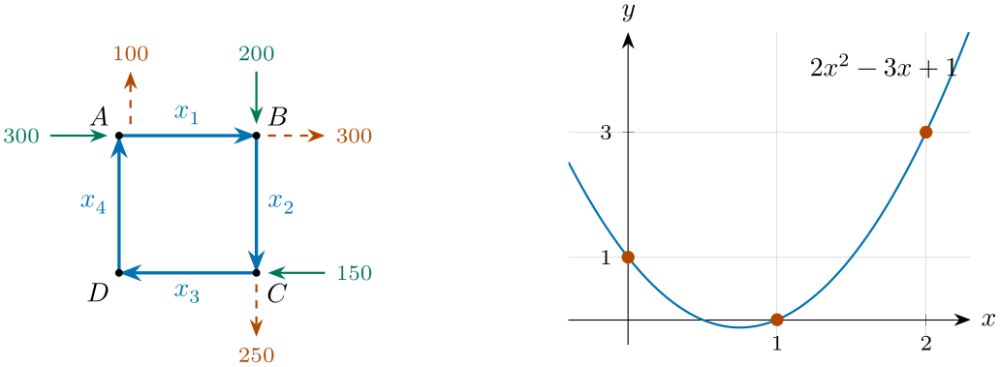
Figure 3.11. (a) Conservation of cars at the four junctions of a ring road leaves one free parameter, the circulating traffic t. (b) Three points determine exactly one parabola; the three equations for its coefficients form a system with a unique solution.
(a) Traffic ring (solid green: cars enter, dashed red: cars leave) (b) The parabola through three points
For x, form A1=37513−1−121. det(A1)=3(3⋅1−2⋅(−1))−1(7⋅1−2⋅5)+(−1)(7⋅(−1)−3⋅5)=40. Thus, x=det(A)det(A1)=2540=58.
For y, form A2=213375−121. det(A2)=2(7⋅1−2⋅5)−3(1⋅1−2⋅3)+(−1)(1⋅5−7⋅3)=25. Thus, y=det(A)det(A2)=2525=1.
For z, form A3=21313−1375. det(A3)=2(3⋅5−7⋅(−1))−1(1⋅5−7⋅3)+3(1⋅(−1)−3⋅3)=30. Thus, z=det(A)det(A3)=2530=56.
Problem 2: Solving a System Using Gaussian Elimination
Solve the system ⎩⎨⎧2x+y−z=3x+3y+2z=73x−y+z=5 using Gaussian Elimination (compare with the previous problem: same system, different method).
Solution. We reduce the augmented matrix: =2mu 21313−1−12137521R1→R1113213−1−21212375R2−R1→R2R3−3R1→R31002125−25−2125252321121 =2mu 52R2→R2100211−25−211252351121R3+25R2→R31002110−211523511651R3→R31002110−21112351156.
Remark. Swapping R1↔R2 at the start puts a 1 in the pivot position and avoids every fraction until the very last step: R2−2R1 and R3−3R1 give [0−5−5∣−11] and [0−10−5∣−16], and then R3−2R2 gives [005∣6]. Choosing a convenient pivot is part of the art of elimination.
Problem 3: Gaussian Elimination Producing a Contradictory Row (No Solution)
Solve the system ⎩⎨⎧x+y+z=12x+y+z=2x+2y+z=4x+y+2z=5 using Gaussian Elimination.
Solution. We reduce the augmented matrix: =2mu 1211112111121245R2−2R1→R2R3−R1→R3R4−R1→R410001−1101−1011034−R2→R21000111011011034 =2mu R3−R2→R31000110011−111034−R3→R310001100111110−34R4−R3→R410001100111010−37. The last row [000∣7] represents 0=7, which is a contradiction. Thus, the system has no solution.
Problem 4: Determining the Solution Type by Ranks
Use the Fundamental Theorem (Rouché–Capelli) to decide the solution type of ⎩⎨⎧x+y+z=12x+y−z=23x+2y=3y+3z=0 by computing rank(A) and rank([A∣B]), and find all solutions if there are any.
Solution. We reduce [A∣B] to row-echelon form: =2mu 123011211−1031230R2−2R1→R2R3−3R1→R310001−1−111−3−331000−R2→R2100011−1113−331000 =2mu R3+R2→R3R4−R2→R41000110013001000. Thus rank(A)=rank([A∣B])=2<n=3. By the Rouché–Capelli theorem the system is consistent and has infinitely many solutions with n−r=1 free parameter. Let z=t: the second row gives y=−3t and the first gives x=1−y−z=1+2t, so (x,y,z)=(1+2t,−3t,t),t∈R.
The last two equations add no new condition: the third is the sum of the first two, and the fourth is 2⋅(first)−(second). Geometrically, four planes pass through one common line.
Problem 5: A System with a Parameter
For which values of a and b does the system ⎩⎨⎧x+y+z=1x+2y+3z=22x+3y+az=b have (i) a unique solution, (ii) no solution, (iii) infinitely many solutions?
Solution. Reduce the augmented matrix: =2mu 11212313a12bR2−R1→R2R3−2R1→R310011112a−211b−2R3−R2→R310011012a−411b−3. The behavior depends on the last row [00a−4∣b−3]:
If a=4: the last row has a pivot in column 3, so rank(A)=rank([A∣B])=3=n and the solution is unique (for every b).
If a=4 and b=3: the last row is [000∣b−3] with b−3=0, so rank(A)=2<rank([A∣B])=3: no solution.
If a=4 and b=3: the last row is zero, rank(A)=rank([A∣B])=2<3: infinitely many solutions with one free parameter (z=t, y=1−2t, x=t).
Check with determinants: det11212313a=a−4, so the unique-solution case is exactly a=4.
Problem 6: Two Free Parameters and the Vector Form
Solve the system {x+2y−z+w=32x+4y−z+3w=8 and write the solution in vector form.
Solution. The augmented matrix is [1224−1−11338]. The operation R2−2R1→R2 gives [1020−111132]. Column 2 has no pivot (its entry in row 2 is 0), so we skip it and find the second pivot in column 3. The pivots are in columns 1 and 3: x,z are pivot variables and y,w are free. Put y=s, w=t. Row 2 gives z=2−t, and row 1 gives x=3−2s+z−w=3−2s+(2−t)−t=5−2s−2t. In vector form xyzw=5020+s−2100+t−20−11,s,t∈R. Here rank(A)=2 and n=4, so n−rank(A)=2 free parameters: the solution set is a plane in R4. (Check with s=t=0: 5−2=3 and 10−2=8.)
Problem 7: A Consistency Condition
Consider the system ⎩⎨⎧x+2y=b1,2x+4y=b2,3x+6y=b3. For which right-hand sides (b1,b2,b3) is the system consistent? Describe all solutions.
Solution. Reduce the augmented matrix: R2−2R1→R2, R3−3R1→R3 give 100200b1b2−2b1b3−3b1. The system is consistent if and only if b2−2b1=0 and b3−3b1=0, that is, if B=b1(1,2,3) is a multiple of the first column. Then rank(A)=rank([A∣B])=1<2 and the solutions are x=b1−2y with y free. In the column picture: the two columns (1,2,3) and (2,4,6) are parallel, so they can only build vectors on one line through the origin.
Problem 8: A Homogeneous System and a Parameter
For which λ does the system ⎩⎨⎧x+2y−z=02x+3y+λz=0x+y+2z=0 have nontrivial solutions? Find them.
Solution. A square homogeneous system has nontrivial solutions exactly when detA=0. Expanding, det121231−1λ2=1(6−λ)−2(4−λ)+(−1)(2−3)=λ−1, so λ=1. For λ=1: R2−2R1→R2 and R3−R1→R3 give two identical rows (0,−1,3), hence a zero row after R3−R2→R3. So −y+3z=0, y=3z, and x=−2y+z=−5z: (x,y,z)=t(−5,3,1),t∈R. For every other λ only the trivial solution (0,0,0) exists.
Solve the following system using Cramer’s rule: ⎩⎨⎧x+2y−z=32x−y+3z=7x+y+z=4
Solve each system using Gaussian elimination, and describe the solution set geometrically (in which position are the planes?): ⎩⎨⎧x+y+z=62x+3y+z=10−x+y+2z=3,⎩⎨⎧x+y+z=42x+y−z=1x+2y+3z=72x+3y+4z=10,⎩⎨⎧x+2y−z=32x+4y−2z=6−x−2y+z=−3.
For the system ⎩⎨⎧x+y+z=22x+3y+z=5x+2y+2z=4 determine whether the system has a unique solution, no solution, or infinitely many solutions, and find all solutions.
A factory produces three types of widgets: A, B, and C. Each A uses 2 units of material X and 1 unit of material Y. Each B uses 1 unit of X and 2 units of Y. Each C uses 3 units of X and 1 unit of Y.
The factory has 10 units of X and 8 units of Y, and all the material is used up. Set up a system of linear equations, find all its solutions, and decide how many widgets of each type can be produced if the numbers of widgets must be non-negative integers.
Use a system of linear equations to determine the quantities of different foods needed to meet specific nutritional goals.
Problem: You need to design a simple, single-meal diet plan that meets three nutritional targets: calories, protein, and carbohydrates. You have three food options:
Grilled Chicken: 200 calories, 40g of protein, 0g of carbohydrates per serving.
Quinoa: 150 calories, 5g of protein, 25g of carbohydrates per serving.
Avocado: 250 calories, 3g of protein, 13g of carbohydrates per serving.
Your goal is to create a meal that has a total of 700 calories, 50g of protein, and 40g of carbohydrates. Let x, y, and z denote the number of servings of Grilled Chicken, Quinoa, and Avocado, respectively. Then the system of equations is:
Solve for x, y, and z to determine how many servings of each food are needed.
For which values of k does the system ⎩⎨⎧x+y+kz=1x+ky+z=1kx+y+z=1 have (a) a unique solution, (b) no solution, (c) infinitely many solutions? Use the rank criterion (Kronecker–Capelli) or Cramer’s rule.
Solve the system and write the solution in vector form: {x+y+2z−w=12x+2y+5z+w=7
For which (b1,b2,b3) is the system x−y=b1,2x+y=b2,3x=b3 solvable? When it is, solve it. Explain the condition in the column picture.
For which λ does ⎩⎨⎧x+2y+z=02x+λy+3z=0x+y+2z=0 have nontrivial solutions? Find all solutions for that λ.
(Chemistry) Balance (a) C3H8+O2→CO2+H2O and (b) Fe2O3+C→Fe+CO2 by setting up a homogeneous linear system. Give the smallest positive integer coefficients.
(Circuit) The mesh equations of a two-loop circuit are 5I1−2I2=9 and −2I1+4I2=0 (currents in amperes). Solve them by Cramer’s rule and find the current in the resistor shared by the two loops. Show that detA=0.
(Statics) A load of 200 N hangs from two cables. Find the tension in each cable (a) if both cables make 45∘ with the horizontal, (b) if both make 30∘. What happens to the tensions as the cables become flatter?
(Interpolation) Find the parabola y=ax2+bx+c through (0,2), (1,3), (2,8). Why is there no function y=ax2+bx+c through (1,2), (1,5), (2,3)?
(Traffic) In the traffic ring of this chapter a counter on street DA shows 80 cars per hour. Find all four flows. What is the smallest possible flow on street AB if no counter is available?
Back matterReferences
Phil Dyke, An introduction to Laplace transforms and Fourier series, 2nd ed., Springer Undergraduate Mathematics Series, Springer, London, 2014.
Kaveh Eftekharinasab and Ivan O. Lastivka, Higher mathematics. Special sections: manual, Kyiv Aviation Institute, Kyiv, 2025, electronic edition.
Ivan O. Lastivka, I. P. Kudzinovska, I. S. Klius, Y. G. Liashenko, and Kaveh A. Eftekharinasab, Higher mathematics: manual, National Aviation University, Kyiv, 2024.
James Stewart, Daniel Clegg, and Saleem Watson, Multivariable calculus, 9th ed., Cengage Learning, Boston, MA, 2021.